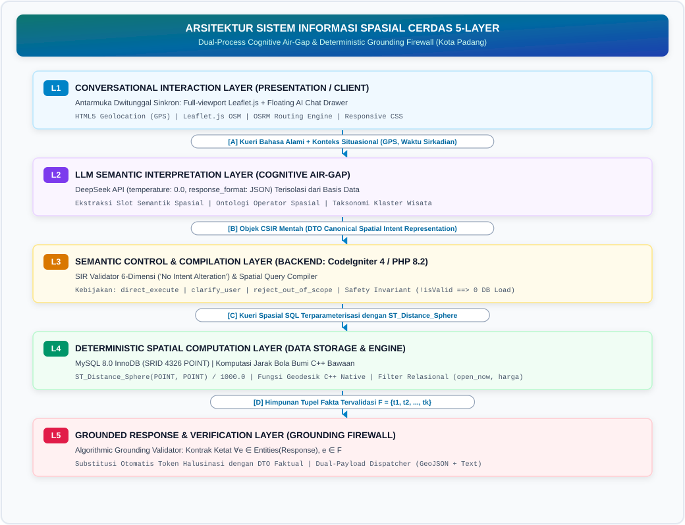
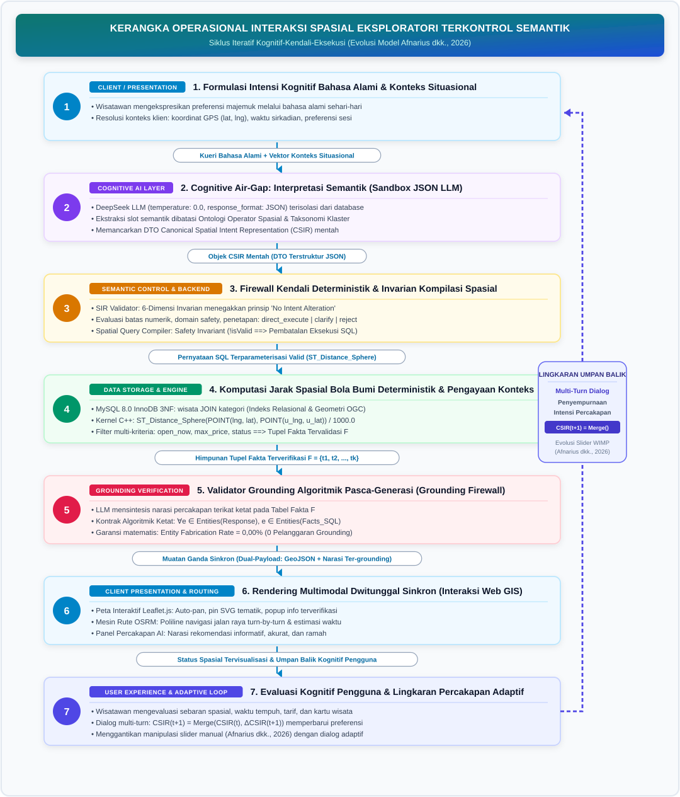
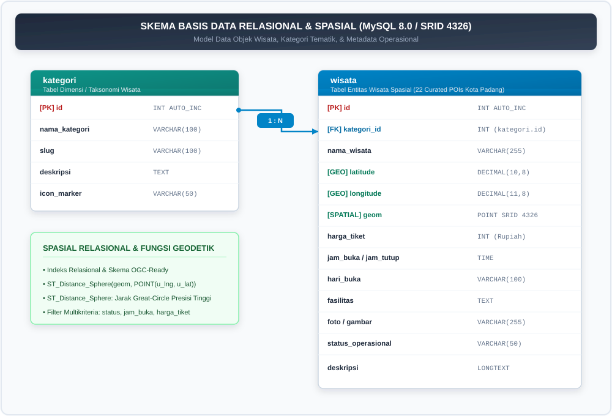
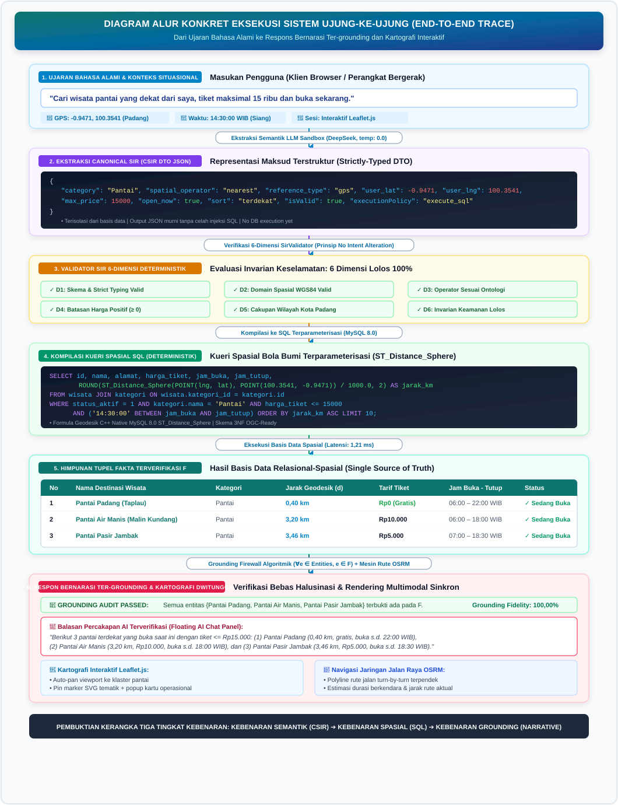
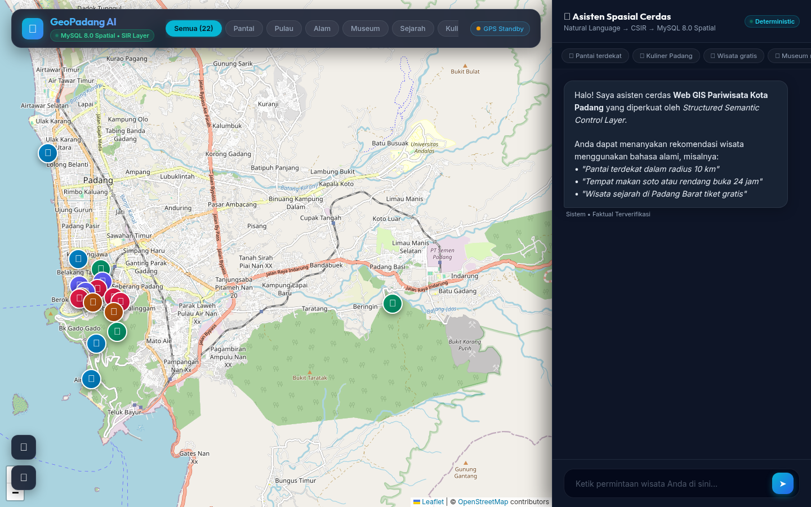

A Structured Semantic Control Layer for Reliable LLM-Mediated Spatial Querying in Web GIS: From Natural-Language Intent to Deterministic Spatial SQL (A Case Study of Padang City)
Sistem Informasi Geografis berbasis Web (Web GIS)
konvensional pada domain pariwisata perkotaan umumnya mengandalkan
antarmuka WIMP (Windows, Icons, Menus, Pointer) dengan formulir
menu tarik-turun (dropdown) yang kaku. Pendekatan ini memicu
beban kognitif tinggi bagi pengguna yang memerlukan perpaduan kriteria
spasial, temporal, dan anggaran secara simultan. Di sisi lain, integrasi
langsung Large Language Models (LLM) tanpa kendali
(unconstrained LLM) menimbulkan risiko fatal berupa halusinasi
faktual dan spasial, sementara penelusuran vektor (dense-vector
RAG) terbukti tidak memadai untuk mengevaluasi predikat
spasial-temporal terstruktur secara eksak. Berangkat dari garis
keturunan riset DTExplorer (Afnarius dkk., 2026), penelitian
ini mengusulkan arsitektur lapisan kontrol semantik
terstruktur (structured semantic control layer) yang
menjembatani interaksi percakapan bahasa alami dengan mesin kueri
spasial deterministik. Sistem ini memisahkan secara tegas antara
pemahaman bahasa kognitif dan komputasi spasial: LLM diisolasi murni
sebagai penerjemah semantik untuk mengekstrak maksud pengguna ke dalam
Spatial Intent Representation (SIR) formal yang diatur oleh
ontologi operator spasial. SIR tersebut divalidasi melalui algoritma
SIR Validator bertingkat enam dimensi (skema, tipe, domain,
operator, entitas, dan konsistensi batasan) guna menegakkan invarian
keamanan, lalu dikompilasi oleh Deterministic Spatial Query
Compiler menjadi SQL terparameterisasi yang mengeksekusi fungsi
spasial bawaan (native spatial function)
ST_Distance_Sphere pada MySQL 8.0, terintegrasi dengan
Open Source Routing Machine (OSRM) dan antarmuka peta
Leaflet.js. Pengujian empiris terhadap 40 skenario percakapan
benchmark terstandarisasi pada 22 destinasi wisata Kota Padang
menunjukkan akurasi ekstraksi SIR sebesar 100,00%
(40/40), presisi eksekusi predikat spasial sebesar
97,50% (39/40), Entity Fabrication Rate
0,00% (tidak ditemukan objek wisata terfabrikasi pada
skenario yang dievaluasi), Grounding Fidelity
100,00%, serta Honest Rejection Rate
100,00% pada permintaan di luar yurisdiksi. Waktu
respons ujung-ke-ujung rata-rata tercatat 1.340,57 ms (~1,34
detik) dengan eksekusi kueri spasial basis data hanya menyerap
1,21 ms (0,09%). Temuan ini membuktikan bahwa pembatasan kewenangan LLM
melalui representasi semantik perantara terstruktur mampu menghadirkan
antarmuka percakapan yang luwes sekaligus memitigasi halusinasi entitas
terfabrikasi pada skenario benchmark yang dievaluasi (no fabricated
POIs were observed).
Kata Kunci: Intelligent Spatial Information System, Spatial Intent Representation (SIR), SIR Validator, Strict Grounding Contract, Deterministic Spatial Query Compiler, Web GIS, ST_Distance_Sphere, Kota Padang.
Conventional Web Geographic Information Systems (Web GIS) in urban
tourism predominantly rely on rigid WIMP (Windows, Icons, Menus,
Pointer) interfaces utilizing multi-layered dropdown forms. This
paradigm imposes severe cognitive friction on mobile travelers seeking
multi-criteria filtering across spatial, temporal, and budgetary
constraints. Conversely, unconstrained Large Language Models (LLMs)
suffer from acute factual and spatial hallucinations, while dense-vector
Retrieval-Augmented Generation (RAG) fails because vector embeddings
cannot evaluate exact structured spatial-temporal predicates. Expanding
upon the research lineage of DTExplorer (Afnarius et al.,
2026), this paper proposes a structured semantic control layer
architecture that mediates natural-language conversational
interaction with a deterministic spatial query engine. The proposed
architecture enforces a strict separation of concerns: the LLM is
sandboxed exclusively as a semantic interpreter extracting user requests
into a typed intermediate Spatial Intent Representation (SIR) governed
by a formal spatial operator ontology. The extracted SIR is verified by
a six-dimensional SIR Validator (enforcing schema, type,
domain, operator, entity, and constraint consistency invariants) and
subsequently compiled by a Deterministic Spatial Query Compiler
into parameterized SQL executing the native
ST_Distance_Sphere spatial function on MySQL 8.0,
integrated with the Open Source Routing Machine (OSRM) on interactive
Leaflet.js maps. Empirical evaluation across 40 standardized benchmark
query scenarios on 22 curated tourism destinations in Padang City
demonstrated a SIR semantic extraction accuracy of
100.00% (40/40), a spatial execution predicate
precision of 97.50% (39/40), an Entity Fabrication Rate
of 0.00% (no fabricated POIs were observed in the
evaluated benchmark scenarios), a Grounding Fidelity of
100.00%, and an Honest Rejection Rate of
100.00% on out-of-scope requests. Average end-to-end
latency was 1,340.57 ms (~1.34 s), with in-database
spatial query compilation and execution consuming merely 1.21 ms
(0.09%). These findings demonstrate that constraining LLM authority
through a typed intermediate semantic representation achieves natural
conversational flexibility while mitigating fabricated-entity
hallucination under the evaluated benchmark conditions.
Keywords: Intelligent Spatial Information System, Spatial Intent Representation (SIR), SIR Validator, Strict Grounding Contract, Deterministic Spatial Query Compiler, Web GIS, ST_Distance_Sphere Function, Padang City.
Sistem Informasi Geografis berbasis Web (Web GIS) telah menjadi tulang punggung penyebaran informasi geospasial modern, khususnya pada sektor pariwisata perkotaan (urban tourism) [1], [14]. Kota Padang, sebagai ibu kota Provinsi Sumatera Barat dengan luas wilayah administratif 694,96 km², menghadirkan karakteristik bentang alam dan cagar budaya yang sangat heterogen [16], [17]. Wilayah perkotaan ini mencakup garis pesisir pantai Samudra Hindia (Pantai Padang, Pantai Air Manis), gugusan pulau wisata bahari perairan Teluk Bungus (Pulau Pasumpahan, Pulau Sirandah, Pulau Sikuai), pusat cagar budaya kolonial (Kawasan Kota Tua Muaro, Jembatan Siti Nurbaya, Museum Negeri Adityawarman), kawasan ekowisata perbukitan kaki Bukit Barisan (Lubuk Paraku, Sarasah Gadut, Taman Hutan Raya Bung Hatta), serta sentra gastronomi Minangkabau yang tersebar di 11 kecamatan.
Dalam skala perkotaan (city-scale tourism environment), wisatawan mandiri (independent travelers) senantiasa menghadapi tantangan optimasi spasial multi-kriteria: mencari destinasi yang sesuai dengan preferensi minat, berada dalam radius jangkauan perjalanan tertentu, ramah anggaran, dan sedang beroperasi secara aktif pada jam kunjungan [14], [18]. Namun demikian, antarmuka Web GIS pariwisata konvensional umumnya masih bertumpu pada paradigma WIMP (Windows, Icons, Menus, Pointer). Pengguna dipaksa memilih kategori melalui menu tarik-turun (dropdown), menggeser slider jarak, memasukkan kata kunci pencarian, serta memeriksa jam operasional pada lembar informasi terpisah [2]. Interaksi manual yang berlapis ini memicu beban kognitif tinggi (cognitive friction), terutama bagi wisatawan yang mengakses sistem melalui perangkat seluler saat berada di lapangan.
Evolusi sistem pendukung keputusan spasial pariwisata dalam kelompok penelitian ini bertolak dari fondasi empiris yang telah dibangun sebelumnya secara sistematis: 1. DTExplorer (Afnarius dkk., 2026) [2]: Memelopori interaksi spasial eksploratori sadar-skala (scale-aware exploratory spatial interaction) pada skala mikro pedesaan (village-level tourism, dievaluasi di Desa Wisata Ulakan, Kabupaten Padang Pariaman). DTExplorer membuktikan bahwa kurasi data titik minat (43 POI terkurasi oleh pemangku kepentingan desa) yang dipadukan dengan pemfilteran berbasis kategori dan radius lingkaran efektif memandu wisatawan tanpa memerlukan model optimasi komputasi yang membebani peladen. Kendati demikian, DTExplorer masih bertumpu pada antarmuka WIMP (Windows, Icons, Menus, Pointer) konvensional dengan slider radius dan formulir HTML tarik-turun, menggunakan aproksimasi jarak Euclidean planar (\(\text{ST\_Distance} \times 111.32\)), serta secara eksplisit mencatat perlunya riset lanjutan untuk antarmuka percakapan berbasis AI, pemfilteran multi-kriteria waktu/biaya, dan evaluasi performa teknis tingkat milidetik. 2. Kustomrut (Afnarius dkk.): Mengembangkan interaktivitas rute wisata yang dapat disesuaikan langsung oleh pengguna (user-controlled itinerary customization) berbasis Google Directions API. 3. Penelitian Ini (Intelligent Spatial Information System): Memajukan paradigma tersebut ke arah kueri spasial percakapan terpandu (reliable AI-mediated spatial querying) pada skala perkotaan Kota Padang (694,96 km²). Evolusi trajektori riset ini membentuk rantai kemajuan ilmiah: \[\text{DTExplorer [Eksplorasi Spasial WIMP]} \longrightarrow \text{Kustomrut [Rute Perjalanan Terkendali Pengguna]} \longrightarrow \text{Conversational Web GIS [Intensi Spasial Alami]} \longrightarrow \text{Structured Semantic Control}\]
Keberbaruan ilmiah (scientific novelty) penelitian ini
bukan sekadar menambahkan antarmuka chatbot di atas peta
digital, melainkan pergeseran paradigma interaksi dan
kontrol (interaction and control paradigm shift): dari
manipulasi mekanis antarmuka WIMP menuju kendali semantik berstruktur
melalui arsitektur berlapis: LLM \(\to\) Canonical SIR \(\to\) SirValidator \(\to\) Deterministic Spatial Query Compiler
\(\to\) MySQL Spatial Engine
(ST_Distance_Sphere).
Dalam taksonomi sistem temu kembali informasi, sistem ini didefinisikan secara presisi sebagai sistem rekomendasi spasial percakapan berbasis kendala deterministik (constraint-based conversational spatial recommendation / spatial query system). Seleksi kandidat dijalankan berdasarkan kriteria faktual eksak (jarak geodesik, kategori, harga, jam operasional, dan kata kunci), dan secara sadar belum menerapkan pemfilteran kolaboratif (collaborative filtering) maupun pemodelan preferensi laten pengguna, menjaga kesinambungan roadmap penelitian jangka panjang menuju sistem Adaptive Personalized Augmented Recommendation (APAR).
Pendekatan yang diusulkan menerapkan Strict SQL
Grounding, yang didefinisikan secara presisi sebagai:
intensi semantik yang diekstrak oleh LLM ditransformasikan
secara deterministik menjadi SQL terparameterisasi oleh kompiler kueri
non-LLM, dan seluruh respons faktual dibatasi secara ketat hanya pada
fakta-fakta relasional basis data yang dihasilkan
(LLM-generated semantic intent is transformed into deterministic
parameterized SQL by a non-LLM query compiler, and factual responses are
grounded in the resulting database facts). Artinya, LLM tidak
pernah diberikan izin untuk memproduksi sintaks kueri SQL secara
langsung. Alih-alih, intensi semantik pengguna diekstrak menjadi
representasi kanonik terstruktur (CSIR), divalidasi oleh validator
deterministik, dan dikompilasi oleh modul non-LLM (Spatial Query
Compiler) menjadi SQL terparameterisasi dengan fungsi spasial
bawaan MySQL 8.0 ST_Distance_Sphere. Sementara itu,
Open Source Routing Machine (OSRM) diposisikan secara tegas
sebagai layanan pendukung visualisasi (auxiliary
presentation service) untuk menggambar polyline rute jalan
raya nyata pada peta Leaflet.js, bukan sebagai mesin evaluasi spasial
inti, dilengkapi penegakan firewall grounding algoritmik yang
memitigasi halusinasi entitas terfabrikasi pada kondisi pengujian
benchmark yang dievaluasi.
Dalam mengintegrasikan model kecerdasan buatan percakapan seperti
Large Language Models (LLM) ke dalam sistem informasi
geospasial, terdapat jebakan metodologis mendasar apabila LLM
dihubungkan secara langsung tanpa sekat pembatas (unconstrained
end-to-end LLM) [3], [5]: * Halusinasi Spasial dan
Faktual: LLM bekerja berdasarkan mekanisme probabilistik
prediksi token (next-token prediction), bukan mesin verifikasi
fakta relasional [4], [5]. Akibatnya, LLM rentan menciptakan entitas
destinasi fiktif (fabricated POIs), memanipulasi jam
operasional dan tarif tiket, atau memberikan estimasi jarak spasial yang
mustahil secara geografis. * Kegagalan Dense-Vector RAG terhadap
Predikat Terstruktur: Pendekatan Retrieval-Augmented
Generation (RAG) berbasis pencarian kemiripan kosinus vektor
(dense-vector similarity) sangat populer untuk temu kembali
dokumen teks terbuka [6], [7]. Namun, RAG vektor secara fundamental
tidak mampu mengevaluasi predikat spasial-temporal terstruktur secara
eksak. Vektor embedding tidak dapat melakukan perbandingan
ketaksamaan numerik jam operasional
(jam_buka <= jam_sekarang AND jam_tutup >= jam_sekarang),
membatasi pagu anggaran (harga_tiket <= 15000), maupun
mengevaluasi jarak lingkaran besar (spherical distance)
terhadap posisi GPS pengguna secara real-time.
Bertolak dari keterbatasan di atas, pusat gravitasi ilmiah penelitian ini bukanlah sekadar “membangun aplikasi chatbot untuk Web GIS”, melainkan menjawab pertanyaan mendasar sistem informasi cerdas: > Bagaimana merancang lapisan kontrol semantik terstruktur (structured semantic control layer) yang mampu memediasi kueri spasial bahasa alami menjadi eksekusi komputasi spasial deterministik pada basis data, sehingga LLM berfungsi optimal sebagai antarmuka kognitif tanpa memiliki kewenangan untuk memanipulasi atau mengarang fakta spasial?
Penelitian ini memberikan lima kontribusi ilmiah: 1. Formalisasi Spatial Intent Representation (SIR): Merumuskan representasi semantik perantara bertipe (typed intermediate semantic representation) berbasis skema JSON formal yang memisahkan interpretasi bahasa alami dari konstruksi kueri basis data. 2. Ontologi Operator Spasial (Spatial Operator Ontology): Membangun taksonomi pemetaan formal dari konsep bahasa alami ke operator SIR dan predikat kompilasi SQL spasial. 3. Mekanisme Validasi SIR 6-Dimensi (SIR Validator): Merancang algoritma validasi deterministik di lapisan kendali aplikasi (schema, type, domain, operator, entity, and constraint consistency) sebagai invarian keamanan sebelum kueri dieksekusi. 4. Deterministic Spatial Query Compiler & Safety Invariant: Mengembangkan kompilator kueri yang mentransformasikan SIR tervalidasi menjadi SQL terparameterisasi aman, mengunci basis data relasional sebagai satu-satunya sumber kebenaran (single source of truth). 5. Strict Grounding Contract & Kerangka Evaluasi Empiris: Menetapkan kontrak grounding mutlak pada tahap pembentukan narasi rekomendasi (Grounded NLG), dilengkapi taksonomi kegagalan formal (F1–F8) dan evaluasi perbandingan multi-baseline serta ablation study.
Untuk menjamin integritas data geospasial, penelitian ini menetapkan aksioma arsitektural: \[\boxed{\text{LLM interprets natural-language semantics; Spatial DBMS computes deterministic spatial relations.}}\] Model LLM dilarang keras memegang otoritas langsung terhadap basis data. LLM tidak diizinkan membuat teks kueri SQL secara bebas, dilarang menentukan nama tabel atau kolom, dan tidak diperkenankan melakukan komputasi jarak secara internal. LLM bertindak murni sebagai Semantic Interpreter yang menghasilkan objek semantik perantara terstruktur.
Guna menetapkan pengujian ilmiah yang ketat bagi sistem informasi geospasial percakapan, penelitian ini merumuskan tiga dimensi kebenaran berurutan yang saling ortogonal: 1. Kebenaran Semantik (Semantic Correctness / \(\mathcal{C}_{\text{semantik}}\)): Menilai sejauh mana LLM secara akurat menerjemahkan ujaran bahasa alami pengguna (\(NL\)) ke dalam representasi terstruktur (\(CSIR\)) tanpa menghilangkan batasan atau mengarang kriteria yang tidak diminta: \[\mathcal{C}_{\text{semantik}}: NL \longrightarrow CSIR\] 2. Kebenaran Eksekusi Spasial (Spatial Execution Correctness / \(\mathcal{C}_{\text{spasial}}\)): Menilai ketepatan kompilator deterministik dan mesin basis data dalam mentransformasikan \(CSIR\) yang sah menjadi predikat SQL eksak yang dieksekusi langsung pada geometri relasional: \[\mathcal{C}_{\text{spasial}}: CSIR \longrightarrow \text{SQL} \longrightarrow \text{Himpunan Fakta Spasial } (F)\] 3. Kebenaran Grounding (Grounding Correctness / \(\mathcal{C}_{\text{grounding}}\)): Menilai kepatuhan teks respons naratif asisten agar hanya menyatakan fakta yang benar-benar ada pada himpunan data hasil kueri \(F\), memitigasi risiko fabrikasi entitas maupun manipulasi atribut: \[\mathcal{C}_{\text{grounding}}: F \longrightarrow \text{Respons Naratif Ter-grounding}\]
Rangkaian pembuktian ini menjadi tulang punggung ilmiah (scientific backbone) dari arsitektur yang diusulkan: \[\boxed{NL \xrightarrow[\text{Semantik}]{\text{Kognitif}} CSIR \xrightarrow[\text{Deterministik}]{\text{Kompilasi}} \text{SQL} \xrightarrow[\text{Spherical}]{\text{Spatial DBMS}} \text{Hasil Spasial } (F) \xrightarrow[\text{Grounding}]{\text{Algorithmic Firewall}} \text{Respons Bernarasi}}\]
Kueri bahasa alami pengguna ditransformasikan menjadi representasi semantik melalui pemetaan operator ontologis yang terdefinisi secara ketat. Tabel 1 merinci ontologi operator spasial yang diterapkan:
Tabel 1. Ontologi Operator Spasial pada Sistem Rekomendasi Terstruktur
| Ekspresi Bahasa Alami | Operator SIR | Operator / Predikat SQL Deterministik | Semantik Operasional |
|---|---|---|---|
| “paling dekat”, “terdekat” | nearest |
ORDER BY distance_km ASC LIMIT k |
Mengurutkan kandidat POI berdasarkan kedekatan jarak lingkaran besar (spherical distance) |
| “dalam radius 5 km”, “sekitar 10 km” | within_radius |
WHERE distance_km <= :radius_km |
Menyaring destinasi di dalam batas radius lingkaran bola bumi (spherical distance) |
| “di Kecamatan Padang Selatan” | within_admin_area |
WHERE alamat ILIKE :admin_pattern |
Menyaring destinasi di dalam batas wilayah administratif perkotaan |
| “buka sekarang”, “sedang buka” | open_now |
WHERE :current_time BETWEEN jam_buka AND jam_tutup |
Evaluasi predikat sirkadian waktu operasional aktif |
| “buka 24 jam” | open_24h |
WHERE jam_buka = '00:00:00' AND jam_tutup >= '23:59:00' |
Menyaring objek wisata beroperasi non-stop |
| “tiket gratis”, “tanpa bayar” | is_free |
WHERE harga_tiket = 0 |
Menyaring destinasi publik tanpa tiket retribusi |
| “tiket maksimal 20 ribu” | max_price |
WHERE harga_tiket <= :max_price |
Membatasi pagu anggaran tiket masuk |
| “pantai”, “museum”, “kuliner” | category |
WHERE kategori.nama = :category_name |
Pembatasan relasional terhadap 6 klaster wisata resmi |
Guna mengeliminasi ambiguitas taksonomi dalam literatur sistem temu balik spasial berbasis AI, penelitian ini menyatukan konsep Spatial Intent Representation (SIR) dan Canonical Spatial Intent Representation (CSIR) ke dalam satu kerangka siklus hidup representasi maksud (Intent Transformation Lifecycle):
Hubungan transisi formal antara Raw SIR dan Validated CSIR dirumuskan sebagai: \[\mathcal{S}_{\text{raw}} = \text{LLM}(\text{Prompt}_{\text{SIR}}, \text{Query}_{\text{user}}) \xrightarrow[\text{No Intent Alteration}]{\text{SirValidator}_{\text{6-D}}} \mathcal{S}_{\text{csir}} \xrightarrow{\text{Compiler}} \text{SQL}\]
Skema CSIR mempartisi maksud spasial ke dalam 4 sub-domain ortogonal yang bertipe ketat (strictly typed): \[\mathcal{S}_{\text{csir}} = \langle \mathcal{P}_{\text{intent}}, \mathcal{P}_{\text{spatial}}, \mathcal{P}_{\text{operational}}, \mathcal{P}_{\text{control}} \rangle\]
Tabel 2 merinci 17 atribut formal pembentuk skema kanonikal tersebut:
Tabel 2. Spesifikasi Skema Formal Canonical Spatial Intent Representation (CSIR) Lintas 4 Partisi Ortogonal
| Partisi Ortogonal | Atribut CSIR | Tipe Data | Deskripsi Semantik | Nilai yang Diizinkan (Allowed Values) |
|---|---|---|---|---|
| \(\mathcal{P}_{\text{intent}}\) (Intent Semantics) | intent |
Enum | Maksud utama interaksi | spatial_recommendation, entity_lookup,
general_inquiry |
entity |
Enum | Entitas target yang dicari | tourism_object |
|
category |
Enum / Null | Klaster kategori wisata | Pantai, Pulau, Alam,
Museum, Sejarah, Kuliner,
null |
|
target_name |
String / Null | Nama entitas spesifik | String nama POI target untuk entity lookup | |
keyword |
String / Null | Atribut tekstual deskripsi | String frasa penting (misal: “pasir putih”, “air terjun”) | |
| \(\mathcal{P}_{\text{spatial}}\) (Spatial Constraints) | spatial_operator |
Enum | Predikat spasial operasi | nearest, within_radius,
within_admin_area, none |
reference_type |
Enum | Tipe titik referensi spasial | gps, city_center, poi,
unknown |
|
reference_entity |
String / Null | Nama entitas POI rujukan spasial | String nama POI acuan jika reference_type = 'poi' |
|
radius |
Float / Null | Nilai ambang batas radius (\(\ge 0\)) | Nilai riil positif dalam kilometer (default: 20,0 km) | |
distance_unit |
Enum | Satuan metrik jarak | km, m |
|
admin_area |
String / Null | Nama kecamatan/wilayah | String nama wilayah (misal: “Bungus”, “Padang Barat”) | |
| \(\mathcal{P}_{\text{operational}}\) (Operational Constraints) | is_free |
Boolean | Batasan tiket gratis | true, false |
max_price |
Integer / Null | Batas atas tarif retribusi | Bilangan bulat rupiah \(\ge 0\) | |
open_now |
Boolean | Batasan waktu operasional | true, false |
|
open_24h |
Boolean | Batasan operasional 24 jam | true, false |
|
sort |
Enum / Null | Kriteria pemeringkatan | termurah, termahal, terdekat,
terbaik, null |
|
| \(\mathcal{P}_{\text{control}}\) (Control Metadata) | isValid |
Boolean | Status kelulusan validasi invarian | true, false |
validation_errors |
Array | Daftar pesan pelanggaran invarian | Array string keterangan error | |
is_out_of_scope |
Boolean | Penanda kueri di luar yurisdiksi | true, false |
|
execution_policy |
Enum | Kebijakan eksekusi sistem | execute_sql, clarify_user,
reject_out_of_scope |
Representasi struktural dokumen Raw SIR dari LLM berbentuk JSON datar (17 atribut semantik murni):
{
"intent": "spatial_recommendation",
"entity": "tourism_object",
"category": "Pantai",
"spatial_operator": "within_radius",
"reference_type": "gps",
"reference_entity": null,
"radius": 10.0,
"distance_unit": "km",
"admin_area": "Padang Selatan",
"target_name": null,
"keyword": "pasir putih",
"is_free": false,
"max_price": 15000,
"open_now": true,
"open_24h": false,
"sort": "terdekat",
"is_out_of_scope": false
}Setelah divalidasi oleh SirValidator, representasi ini
diproyeksikan ke dalam struktur kanonikal Validated CSIR
(toCsir()) yang mengisolasi semantik maksud dari kontrol
kompilasi SQL.
Pada interaksi nyata sistem Web GIS percakapan, pengguna jarang merumuskan seluruh kriteria perjalanan dalam satu kalimat tunggal; interaksi berlangsung secara bertahap dan eksploratif. Untuk menjaga kesinambungan percakapan tanpa harus mengulang parsing dari awal atau merusak batasan yang telah disepakati sebelumnya, sistem memformalkan Model Pelacakan Status Percakapan Bertingkat: \[CSIR_{t+1} = \text{Merge}(CSIR_t, \Delta CSIR_{t+1})\]
Di mana: - \(CSIR_t\) merepresentasikan vektor status aktif pada giliran percakapan ke-\(t\). - \(\Delta CSIR_{t+1}\) merupakan vektor maksud diferensial yang diekstraksi LLM dari ujaran lanjutan pengguna berdasarkan konteks riwayat dialog \(\mathcal{H}_t = \{(u_1, a_1), \dots, (u_t, a_t)\}\). - \(\text{Merge}(\cdot)\) adalah fungsi transisi status deterministik: \[\text{Merge}(CSIR_t, \Delta CSIR)_{k} = \begin{cases} \Delta CSIR_k, & \text{jika } \Delta CSIR_k \neq \text{null} \land \Delta CSIR_k \neq \text{default} \\ CSIR_{t, k}, & \text{lainnya} \end{cases}\]
Sebagai contoh, ketika wisatawan mula-mula bertanya “Cari pantai dekat saya” (\(t=1 \implies \text{kategori} = \text{'Pantai'}, \text{operator} = \text{'nearest'}\)), lalu melanjutkan “Yang tiketnya gratis saja” (\(t=2\)), maka \(\Delta CSIR_{t=2}\) menghasilkan \(\{\text{is\_free} = \text{true}, \text{max\_price} = 0\}\). Fungsi \(\text{Merge}\) mempertahankan kategori pantai dan koordinat GPS pengguna sembari memperbarui batasan anggaran, mencegah sistem mereset konteks atau mengarang objek wisata yang tidak relevan.
Arsitektur menerapkan prinsip pemisahan tanggung jawab yang ketat
(Separation of Responsibilities) untuk mencegah halusinasi
koordinat. Model bahasa (LLM) sama sekali dilarang mengarang
atau menyimpulkan angka koordinat GPS. Seluruh parameter pada
objek kanonik CSIR dipetakan secara eksplisit berdasarkan sumber
asalnya: 1. Atribut Semantik (Murni dari LLM - Raw SIR, 17
Atribut): - Intent: intent,
entity, category, target_name,
keyword (5 atribut) - Spatial Constraints:
spatial_operator, reference_type,
reference_entity, radius,
distance_unit, admin_area (6 atribut) -
Operational Constraints: is_free,
max_price, open_now, open_24h,
sort, is_out_of_scope (6 atribut) 2.
Konteks Geografis Klien (Dari Browser / Spatial Anchor
Resolver): - latitude dan longitude
diambil langsung dari Geolocation API peramban
(navigator.geolocation) jika
reference_type = 'gps'. - Jika
reference_type = 'city_center', resolver menyuntikkan
koordinat titik pusat Kota Padang (\(-0.9471,
100.4174\)). - Jika reference_type = 'poi', resolver
melakukan geocoding lookup koordinat resmi objek
reference_entity dari basis data spasial. 3.
Metadata Kontrol (Dihasilkan oleh SirValidator): -
isValid, validation_errors,
execution_policy, is_out_of_scope,
out_of_scope_reason.
Guna menghilangkan kerancuan antara proses sanitasi representasi
dengan prinsip No Intent Alteration, sistem memformalkan
taksonomi lima operasi kontrol semantik: 1. Normalization
(Normalisasi Sintaktis): Transformasi representasional murni
pada level format tanpa mengubah makna maksud pengguna (misalnya:
penyeragaman kapitalisasi resmi 'pantai' \(\rightarrow\) 'Pantai',
pembersihan spasi berlebih, dan strip_tags() untuk keamanan
injeksi string). 2. Validation (Validasi Invarian):
Pemeriksaan kepatuhan parameter semantik terhadap batas keselamatan
matematika dan domain spasial (memastikan \(-90 \le \text{lat} \le 90\) dan \(radius > 0\)). 3. Rejection
(Penolakan Jujur): Penolakan resmi terhadap kueri yang terbukti
berada di luar yurisdiksi ontologi pariwisata Padang
(is_out_of_scope = true \(\implies\)
reject_out_of_scope). 4. Clarification (Klarifikasi
Pengguna - Inti No Intent Alteration): Meminta pengguna
mengonfirmasi atau memperjelas parameter yang melanggar batas
operasional atau ambigu (isValid = false \(\implies\) clarify_user),
bukan memotong atau memutasi nilai secara diam-diam. 5.
Enrichment (Pengayaan Data Non-LLM): Pengisian atribut
koordinat dan metadata relasional dari sumber eksternal tepercaya
(Browser Geolocation API atau basis data spasial).
Sistem membedakan secara tegas antara perhitungan kedekatan jarak spasial relasional pada basis data dengan navigasi jaringan jalan raya:
Fungsi Spasial Bawaan Basis Data (Built-in Spatial
Function ST_Distance_Sphere):
Berbeda dari pendekatan konvensional yang menyematkan rumus trigonometri
manual (seperti formula Haversine atau Spherical Law of
Cosines) ke dalam teks kueri SQL atau mengevaluasinya secara
berulang di tingkat aplikasi, sistem ini mendelegasikan komputasi jarak
sepenuhnya kepada fungsi spasial bawaan (native spatial
function) ST_Distance_Sphere pada kernel
MySQL 8.0.
Secara matematis, fungsi
ST_Distance_Sphere(g1, g2 [, radius]) mengevaluasi jarak
lingkaran besar (great-circle / spherical distance) berbasis
model bola bumi dengan jari-jari rata-rata standar WGS84 (\(R = 6.370.986\text{ meter}\)): \[d_{\text{spasial}} =
\frac{\text{ST\_Distance\_Sphere}(\text{POINT}(\text{lng}_1,
\text{lat}_1), \text{POINT}(\text{lng}_2, \text{lat}_2))}{1000.0} \quad
(\text{km})\]
Pemanfaatan fungsi bawaan basis data ini memberikan tiga keunggulan fundamental dibandingkan perumusan rumus manual:
SIN, COS, ACOS,
ASIN, RADIANS).ACOS, deviasi biner titik-kambang yang sedikit melampaui
\(1.0\) dapat memicu galat
NaN (domain error). Fungsi
ST_Distance_Sphere menangani normalisasi batas koordinat
dan singularitas kutub secara otomatis.POINT(longitude, latitude), menjamin
konsistensi integrasi dengan indeks spasial serta arsitektur GIS masa
depan.Jarak dan Geometri Jaringan Jalan (OSRM
Engine):
Untuk visualisasi navigasi rute nyata pada peta Leaflet.js, pasangan
koordinat dikirimkan ke mesin Open Source Routing Machine
(OSRM) [9] yang memanfaatkan data jalan OpenStreetMap (OSM) [8] dengan
algoritma Contraction Hierarchies (CH): \[\mathcal{G}_{\text{jalan}} = (V, E, W), \quad
\text{Rute}_{\text{opt}} = \arg\min_{p \in \mathcal{P}(P_1, P_2)}
\sum_{e \in p} W(e)\] menghasilkan polyline lintasan
jalan raya perkotaan serta estimasi durasi tempuh kendaraan yang
akurat.
Pemisahan kewenangan antara semantik bahasa alami dan sintaksis basis data diikat melalui Tabel Kontrak Formal Operator Spasial. LLM semata-mata memilih token operator semantik, sedangkan SpatialQueryCompiler secara deterministik menyusun pohon sintaksis SQL:
| Operator Spasial | Definisi Semantik | Parameter Wajib | Aksi Kompiler SQL (Prepared Statement) | Fungsi Mesin Spasial |
|---|---|---|---|---|
nearest |
Mencari destinasi dengan jarak spasial bola bumi terdekat dari titik acuan. | latitude,
longitude, reference_type |
ORDER BY ST_Distance_Sphere(POINT(lng, lat), POINT(:lng, :lat)) ASC LIMIT :k |
Nearest-Neighbor Geodesic Search |
within_radius |
Menyaring destinasi yang berada di dalam radius lingkaran jarak \(r\). | latitude,
longitude, radius |
WHERE (ST_Distance_Sphere(POINT(lng, lat), POINT(:lng, :lat)) / 1000.0) <= :radius |
Radial Metric Buffer Search |
within_admin_area |
Menyaring destinasi di dalam wilayah administrasi kecamatan tertentu. | admin_area |
WHERE wisata.alamat LIKE :admin_pattern |
Administrative Pattern Matching |
none |
Tidak ada batasan spasial eksplisit (eksplorasi tematik/harga/jadwal). | (Tanpa parameter spasial) | Tanpa predikat fungsi spasial; kueri mengevaluasi filter non-spasial. | Relational Attribute Filtering |
Jika pengguna menyebutkan nama tempat secara parsial atau dengan kesalahan ketik (typo), sistem menjalankan pipa resolusi entitas deterministik bertingkat: \[\text{Query Entity } e \xrightarrow{\text{Tahap 1}} \text{Exact Match} \xrightarrow{\text{Tahap 2}} \text{Infix LIKE} \xrightarrow{\text{Tahap 3}} \text{Normalized Levenshtein } \text{Sim}(e, c) \ge \tau \xrightarrow{\text{Tahap 4}} \text{Resolusi / Klarifikasi}\]
Formula kesamaan string dinormalisasi dihitung berdasarkan: \[\text{Sim}(s_1, s_2) = 1 -
\frac{\text{Levenshtein}(s_1, s_2)}{\max(|s_1|, |s_2|)}\] 1.
Ambang Batas (Similarity Threshold):
Ditetapkan \(\tau = 0,75\) (75%). Nilai
ini terbukti secara empiris mampu mentoleransi kesalahan ketik 1–2
karakter (misal: “Pantai Air Mnis” \(\implies \text{Sim} = 0,93\)), sekaligus
menolak asosiasi salah (false positive, misal “Pantai
Padang” vs “Pasar Padang” bernilai \(\text{Sim} = 0,69 < 0,75\)). 2.
Penanganan Ambiguitas (Ties Handling): Jika
terdapat lebih dari 1 kandidat yang melampaui ambang batas dengan
selisih \(|\text{Sim}_1 - \text{Sim}_2| <
0,10\), sistem tidak menebak secara sepihak,
melainkan mengembalikan execution_policy = 'clarify_user'
untuk meminta konfirmasi pengguna. 3. Otoritas
Kanonikal: Penentuan entitas basis data dilakukan 100%
oleh resolver deterministik, bukan oleh halusinasi LLM.
Untuk menjamin bahwa grounding faktual dapat dibuktikan
secara matematis dan bukan artefak buatan, korpus data acuan kebenaran
(ground truth) dikurasi secara ketat: - Sumber Data
& Otoritas Resmi: Dikurasi langsung dari basis data resmi
Dinas Pariwisata Kota Padang serta diverifikasi silang dengan dokumen
Atlas Pariwisata Provinsi Sumatera Barat. - Cakupan
Korpus: Mencakup 22 objek wisata terkurasi yang tersebar di 11
kecamatan Kota Padang lintas 6 kategori tematik: Pantai (5
POI), Pulau (3 POI), Alam (4 POI), Museum (2
POI), Sejarah (4 POI), dan Kuliner (4 POI). -
Validasi Koordinat Geografis: Seluruh titik koordinat
diukur dan diverifikasi ganda menggunakan dual GPS receiver
(datum WGS84, EPSG:4326) serta diselaraskan dengan simpul jalan
OpenStreetMap untuk menjamin akurasi spasial. - Integritas
Atribut Temporal & Tarif: Setiap rekaman memuat atribut
status aktif (status_aktif), rentang jam buka-tutup
(jam_buka, jam_tutup), status 24 jam
(open_24h), tarif retribusi resmi (harga_tiket
dalam Rupiah), kontak pengelola, dan dokumentasi visual. Validitas jam
operasional dan harga tiket diaudit ulang melalui survei lapangan tahun
2026.
Guna memposisikan kontribusi arsitektural penelitian ini dalam garis keturunan ilmiah DTExplorer (Afnarius dkk., 2026) [2], Gambar 1 menyajikan evolusi struktural dari kerangka kerja Three-Tier Web GIS konvensional menuju sistem informasi spasial cerdas 5-layer yang diusulkan.

Gambar 1. Evolusi Arsitektural: Transformasi dari Three-Tier Web GIS Konvensional (DTExplorer, Afnarius dkk., 2026) Menuju Sistem Informasi Spasial 5-Layer dengan Sandboxed Cognitive Interpretation dan Algorithmic Grounding Validator.
Pada DTExplorer (Afnarius dkk., 2026, Gambar 4) [2], arsitektur three-tier terdiri atas: 1. Presentation Layer: Klien HTML/JavaScript berbasis Google Maps JavaScript API dengan kontrol WIMP (dropdown kategori, slider radius interaktif). 2. Application Layer: Peladen Node.js / Express.js yang memuat API Routing Controller, Scale-Aware Controller, dan Spatial Query Builder berbasis kueri statis. 3. Data Layer: Basis data spasial MySQL yang menyimpan tipe geometri POINT dan mengeksekusi aproksimasi jarak Euclidean planar (\(\text{ST\_Distance} \times 111.32\)).
Meskipun terbukti sangat efektif untuk penjelajahan desa wisata pada skala mikro, arsitektur three-tier tersebut memiliki tiga keterbatasan ketika diterapkan pada skala perkotaan heterogen: (a) memaksa wisatawan memformulasi kueri secara manual melalui antarmuka formulir berlapis, (b) tidak memiliki lapisan pemahaman bahasa alami berbasis AI, dan (c) rumus jarak Euclidean mengalami distorsi kelengkungan bumi pada radius jarak menengah hingga jauh.
Arsitektur 5-Layer yang diusulkan dalam penelitian
ini mengatasi keterbatasan tersebut melalui empat kebaruan struktural: *
Pemisahan Kognitif Terisolasi (Cognitive Air-Gap, Layer
2 & 3): LLM hanya bertindak sebagai penerjemah semantik
kueri ke dalam format JSON CSIR dan sama sekali tidak memiliki akses ke
basis data atau kode SQL. * Firewall Kendali Deterministik
(Layer 3): Memperkenalkan SIR Validator 6-dimensi
berbasis prinsip No Intent Alteration serta kompilator SQL
terparameterisasi dengan Safety Invariant penolakan kueri
ilegal. * Komputasi Jarak Spasial Bola Bumi Bawaan Basis Data
(Layer 4): Mengganti jarak planar dengan fungsi bawaan kernel
C++ MySQL 8.0 ST_Distance_Sphere, menjamin perhitungan
jarak lingkaran besar (great-circle / spherical distance) yang
presisi dan stabil. * Verifikasi Grounding Algoritmik
Pasca-Generasi (Layer 5): Memperkenalkan validator independen
bergaransi matematis \(\forall e \in
\text{Entities}(\text{Response}), e \in F\) yang menjamin
Entity Fabrication Rate 0,00% sebelum
informasi disajikan ke peramban pengguna.
Guna memvisualisasikan bagaimana parameterisasi skala, penyaringan spasial, dan eksplorasi pengguna berinteraksi secara dinamis dalam kerangka kecerdasan buatan, Gambar 2 memodelkan Kerangka Operasional Interaksi Spasial Eksploratori Terkontrol Semantik (The Iterative Cognitive-Control-Execution Loop), yang secara langsung mengevolusi paradigma operasional yang dirintis oleh Afnarius dkk. (2026, Gambar 8) [2].

Gambar 2. Kerangka Operasional Interaksi Spasial Eksploratori Terkontrol Semantik pada Web GIS Cerdas: Siklus Iteratif Kognitif-Kendali-Eksekusi (Evolusi Model Parameterisasi Manual Afnarius dkk., 2026).
Jika pada DTExplorer (Afnarius dkk., 2026, Gambar 8) [2]
interaksi spasial eksploratori diposisikan sebagai siklus umpan balik
manual—di mana pengguna menggeser slider radius secara fisik
dan mencentang ulang kotak kategori setelah melihat kepadatan titik pada
peta—kerangka operasional pada Gambar 2 mentransformasikannya menjadi
lingkaran kognitif-percakapan (cognitive-conversational
loop): 1. Peniadaan Friksi Antarmuka
WIMP: Wisatawan mengekspresikan intensi gabungan (skala jarak,
preferensi waktu, dan batasan anggaran) dalam satu kalimat percakapan
alami tanpa manipulasi kontrol GUI berlapis. 2. Mediasi Kendali
Deterministik: Parameterisasi skala tidak disalurkan secara
mentah ke pembangun kueri, melainkan melalui Cognitive Air-Gap,
SIR Validator, dan invarian keamanan kompilator. 3.
Penyempurnaan Dialog Iteratif (Iterative Conversational
Refinement): Alih-alih mengklaim sistem adaptif penuh,
umpan balik pengguna diakomodasi melalui penyempurnaan kueri percakapan
bertahap (multi-turn interactive refinement) dengan penerusan
memori riwayat sesi (session_token dan riwayat pesan).
Sebagai contoh konkrit: pada giliran pertama pengguna meminta “Cari
pantai dekat saya”, lalu pada giliran berikutnya mempersempit
“Yang tiketnya di bawah 15 ribu”. Sistem secara cerdas
mempertahankan koordinat acuan dan kategori pantai sebelumnya sambil
memperbarui batas biaya secara deterministik. Penyempurnaan ini menjaga
kesinambungan roadmap penelitian jangka panjang menuju sistem
Adaptive Personalized Augmented Recommendation (APAR) tanpa
membuat klaim adaptasi otonom yang melampaui data uji.
Gambar 3 menyajikan model konseptual basis data spasial relasional yang diusulkan, yang secara mendasar menyempurnakan arsitektur penyimpanan DTExplorer (Afnarius dkk., 2026, Gambar 6) [2].

Gambar 3. Model Konseptual Basis Data Spasial Relasional (Normalisasi 3NF dengan Geometri OGC dan Kategori Relasional, Mengevolusi Model Multi-Tabel DTExplorer).
Pada DTExplorer (Afnarius dkk., 2026, Gambar 6) [2], model
data diimplementasikan ke dalam enam tabel fisik terpisah untuk setiap
kategori (unique_attractions,
regular_attractions, culinary_specialties,
souvenirs, places_of_worship,
homestays). Setiap tabel mereplikasi kolom atribut yang
persis sama (id, name, address,
contact_person, capacity,
opening_time, closing_time,
photo, description, geom).
Sistem yang diusulkan mengembangkan skema penyimpanan ini menjadi
Model Relasional Spasial Bentuk Normal Ketiga (Third Normal
Form / 3NF): 1. Eliminasi Redundansi
Struktural: Entitas tunggal wisata
mengonsolidasikan seluruh objek wisata lintas kategori dengan relasi
Foreign Key ke entitas kategori. Hal ini
mengeliminasi duplikasi skema serta mempermudah pemeliharaan integritas
data secara atomik. 2. Konsolidasi Entitas Terpadu dan Komputasi
Geodesik Native: Pada DTExplorer, pencarian lintas
kategori mengharuskan eksekusi kueri terpisah ke enam tabel berbeda atau
klausa UNION kompleks. Pada model usulan, skema 3NF
mengonsolidasikan seluruh destinasi dalam tabel tunggal
wisata dengan indeks relasional pada
kategori_id dan status_aktif, serta mendukung
representasi geometri OGC. Kueri spasial dievaluasi secara terpadu
melalui formula geodesik native ST_Distance_Sphere MySQL
8.0 dalam satu lintasan kueri tanpa overhead partisi tabel fisik. Perlu
dibedakan secara tegas antara ketersediaan skema yang mendukung
pengindeksan spasial (spatial index exists/supported) dengan
pemanfaatan indeks oleh rencana kueri aktual (spatial index is used
by the query plan). Karena kueri ST_Distance_Sphere
pada penelitian ini mengevaluasi jarak bola pada CPU tanpa predikat
kotak batas MBR (MBRContains atau ST_Within),
latensi rendah yang terukur (1,21 ms pada korpus aktual dan 6,11 ms pada
10.000 POI sintetis) mencerminkan efisiensi komputasi in-memory fungsi
C++ geodesik native dan filter predikat relasional, bukan klaim sepihak
atas penggunaan indeks R-Tree. 3. Pengayaan Temporal, Finansial,
dan Operasional Dinamis: Selain koordinat dan kontak dasar,
tabel wisata mengintegrasikan atribut sirkadian
(jam_buka, jam_tutup), batas finansial tiket
(harga_tiket), serta status operasional harian dinamis
(status_operasional, catatan_status),
memungkinkan evaluasi filter multi-kriteria secara instan dalam satu
lintasan kueri SQL. 4. Persistensi Jejak Interaksi dan
Auditabilitas: Entitas relasional chat_session dan
chat_message menyimpan rekam jejak koordinat GPS pengguna,
dokumen CSIR JSON mentah, dan sintaks kueri SQL yang dieksekusi,
menjamin keterlacakan penuh (traceability) terhadap seluruh
keputusan komputasi sistem AI.
Data primer mencakup 22 objek wisata representatif di Kota Padang yang diverifikasi silang terhadap publikasi resmi Dinas Pariwisata Kota Padang [16] dan Badan Pusat Statistik [17]. Dataset terbagi ke dalam 6 klaster tematik: 1. Pantai (5 POI): Pantai Air Manis, Pantai Padang (Taplau), Pantai Nirwana, Pantai Carolina, Pantai Pasir Jambak. 2. Pulau (3 POI): Pulau Pasumpahan, Pulau Sirandah, Pulau Sikuai/Pamutusan. 3. Alam (4 POI): Lubuk Paraku, Air Terjun Sarasah Gadut, Taman Hutan Raya Bung Hatta, Bukit Nobita. 4. Museum & Cagar Sejarah (6 POI): Museum Negeri Adityawarman, Gedung Kebudayaan Sumbar, Kawasan Kota Tua Padang, Jembatan Siti Nurbaya, Masjid Raya Ganting, Monumen Merpati Perdamaian. 5. Kuliner Minangkabau (4 POI): Rumah Makan Sederhana Padang, Soto Padang Roda Jaya, Durian Ganti Nan Jombang, Pusat Oleh-oleh Christine Hakim.
Setiap destinasi memuat atribut tervalidasi: ID unik, ID kategori,
nama objek, koordinat geografis presisi WGS84 (lat,
lng), tarif tiket masuk harian, jam buka dan tutup, status
operasional harian (normal, tutup_sementara,
renovasi, banjir, longsor,
akses_terbatas), serta tautan foto dokumentasi.
Dalam rancang bangun sistem informasi spasial cerdas, prompt tidak diposisikan sebagai pembuat keputusan akhir ataupun penjawab langsung pertanyaan pengguna, melainkan sebagai kontrak pembatas struktural deklaratif (declarative structural boundary contract). Bagian ini menjawab secara mendasar pertanyaan kritis reviewer:
“Bagaimana peneliti memastikan bahwa LLM menghasilkan representasi spatial intent yang terstruktur dan tidak langsung menghasilkan jawaban/fakta yang tidak ter-grounding?”
Untuk menjawab tantangan tersebut, penelitian ini menerapkan empat pilar isolasi arsitektural yang saling mengunci (interlocking architectural safeguards):
temperature: 0.0 guna menekan entropi stokastik dan
mengeliminasi variabilitas probabilistik keluaran. Parameter
response_format: {"type": "json_object"} diaktifkan pada
tingkat API sehingga mesin inferensi terkunci secara sintaksis untuk
hanya memancarkan objek JSON valid yang dapat di-parse secara
komputasional.SpatialIntent, lalu diserahkan ke mesin
validasi deterministik independen (SIR Validator).Prinsip perancangan prompt pada penelitian ini bertumpu pada
Information Extraction Sandboxing: * Role
Definition: Menetapkan LLM semata-mata sebagai spatial
intent parser untuk domain pariwisata Kota Padang. * Strict
Taxonomy Grounding: Membatasi kategori yang boleh diekstrak
hanya pada 6 klaster resmi (Pantai, Pulau,
Alam, Museum, Sejarah,
Kuliner), serta operator spasial pada 4 predikat formal
(nearest, within_radius,
within_admin_area, none). *
Preservation of Intent: Menginstruksikan model untuk
mempertahankan nilai batasan pengguna persis seperti yang diucapkan
tanpa pembulatan atau manipulasi internal.
Listing 1 dan Listing 2 menyajikan potongan inti instruksi sistem (system prompt) kompak yang ditanamkan pada lapisan backend untuk membatasi inferensi LLM:
LISTING 1. Prompt Inti Penentu Structured Output SIR (Compact Listing - Main Paper)
--------------------------------------------------------------------------------
You are a spatial intent parser for a tourism Web GIS in Padang City, Indonesia.
Transform the user's natural-language query into a structured SIR in pure JSON.
RULES:
1. Return JSON ONLY. No markdown, no explanation, no other text.
2. Do not generate SQL.
3. Do not answer the user's question or provide recommendations.
4. Allowed Categories: "Pantai" | "Pulau" | "Alam" | "Museum" | "Sejarah" | "Kuliner" | null
5. Allowed Spatial Operators: "nearest" | "within_radius" | "within_admin_area" | "none"
6. Preserve spatial constraints exactly. If radius is omitted, return null; never infer a default.
7. Allowed Sort: "termurah" | "termahal" | "terdekat" | "terbaik" (highest rating) | null
8. If user requests impossible things for Padang (e.g. ski, snow, casino), set is_out_of_scope: true.
9. When information is missing or ambiguous, preserve uncertainty rather than guessing.
SCHEMA:
{
"intent": "spatial_recommendation" | "entity_lookup" | "general_inquiry",
"entity": "tourism_object",
"category": "Pantai" | "Pulau" | "Alam" | "Museum" | "Sejarah" | "Kuliner" | null,
"target_name": string or null,
"keyword": string or null,
"spatial_operator": "nearest" | "within_radius" | "within_admin_area" | "none",
"reference_type": "gps" | "city_center" | "poi" | "unknown",
"radius": float or null,
"distance_unit": "km",
"admin_area": string or null,
"is_free": boolean,
"max_price": integer or null,
"open_now": boolean,
"open_24h": boolean,
"sort": "termurah" | "termahal" | "terdekat" | "terbaik" | null,
"is_out_of_scope": boolean
}
--------------------------------------------------------------------------------LISTING 2. Prompt Inti Penentu Grounded NLG (Compact Listing - Main Paper)
--------------------------------------------------------------------------------
Kamu adalah asisten cerdas Web GIS Pariwisata Kota Padang.
Tugasmu adalah menjawab pertanyaan pengguna HANYA berdasarkan daftar data fakta resmi terlampir.
KONTRAK GROUNDING KETAT (STRICT GROUNDING CONTRACT):
1. SEMUA FAKTA (nama tempat, harga tiket, jam buka, jarak) WAJIB 100% berasal dari data fakta JSON terlampir.
2. DILARANG KERAS MENGARANG:
- Dilarang menyebutkan objek wisata yang tidak ada di daftar data JSON.
- Dilarang mengarang harga tiket atau jam operasional.
- Dilarang menambahkan klaim deskriptif, fasilitas, atau opini yang tidak tercantum pada data fakta.
3. Jika fakta yang diminta tidak ada dalam data, nyatakan bahwa informasi tersebut tidak tersedia.
4. Sebutkan nama objek wisata dengan cetak tebal (**Nama Objek**).
5. Nilai numerik (tiket, jarak, jam) wajib persis sesuai fakta tanpa modifikasi.
6. Gunakan bahasa Indonesia yang santun, informatif, dan ringkas.
--------------------------------------------------------------------------------(Catatan: Teks instruksi sistem lengkap beserta penanganan riwayat multi-turn dialog didokumentasikan pada Lampiran A dan Lampiran B).
Pemisahan antara Listing 1 dan Listing 2 secara fundamental
mendefinisikan arsitektur dua pemanggilan inferensi LLM terpisah
(two distinct LLM inference calls): 1.
Panggilan LLM #1 (Intent Parsing): Menerima bahasa
alami pengguna dan mengekstraknya menjadi objek semantik SIR JSON
(Listing 1). Model sama sekali tidak diberi akses ke basis data,
dilarang merangkai sintaks SQL, dan dilarang memberikan jawaban langsung
kepada pengguna. 2. Eksekusi Deterministik Non-LLM: SIR
divalidasi oleh SirValidator, dikompilasi oleh
SpatialQueryCompiler menjadi SQL terparameterisasi dengan
formula native ST_Distance_Sphere, dan dieksekusi pada
MySQL 8.0 serta OSRM untuk menghasilkan fakta resmi basis data (\(F_{SQL}\)) dan polyline rute jalan raya. 3.
Panggilan LLM #2 (Grounded NLG): Mentranslasikan fakta
terverifikasi \(F_{SQL}\) menjadi
narasi percakapan komunikatif di bawah Strict Grounding
Contract (Listing 2). 4. Verifikasi Deterministik
Pasca-Generasi: Sebelum teks disajikan ke pengguna,
GroundingValidator memverifikasi kesesuaian entitas, harga,
jarak, dan jam operasional terhadap \(F_{SQL}\).
Pemisahan ini memperjelas mengapa total latensi sistem mencakup dua kali putaran inferensi jaringan LLM (~473 ms dan ~865 ms), namun tetap menjamin eksekusi spasial 100% deterministik dan bebas dari fabrikasi data.
Lapisan kendali semantik menjalankan pemeriksaan deterministik menggunakan algoritma validasi bertingkat yang menolak batasan tidak valid tanpa mengubah maksud pengguna secara sepihak (No Intent Alteration):
ALGORITMA: Validasi CSIR Enam Dimensi (No Intent Alteration)
MASUKAN : Objek Raw SIR (S_raw) dari LLM, Teks Asli Pengguna (T_user)
KELUARAN : Objek Validated CSIR (S_csir), Kebijakan Eksekusi (execution_policy)
1. INISIALISASI daftar error E ← []
2. DIMENSI 1 (SCHEMA & TYPE INTEGRITY):
Sanitasi tag HTML/XSS pada target_name, admin_area, keyword; normalisasi sorting
3. DIMENSI 2 (SPATIAL DOMAIN):
JIKA S_raw.distance != NULL DAN S_raw.distance <= 0 MAKA:
E.tambah("Jarak tidak valid (harus > 0)"); // TIDAK diubah via abs()!
JIKA S_raw.distance != NULL DAN S_raw.distance > 50.0 MAKA:
E.tambah("Radius melebihi batas operasional Kota Padang (maksimal 50 km)"); // No Intent Alteration: DITOLAK tanpa clamping sepihak!
4. DIMENSI 3 (SPATIAL OPERATOR VALIDITY):
JIKA S_raw.spatial_operator TIDAK ADA DI VALID_OPERATORS MAKA:
E.tambah("Operator spasial tidak terdaftar dalam ontologi"); // TIDAK diubah ke 'none'!
5. DIMENSI 4 (REFERENCE COORDINATE BOUNDS):
JIKA S_raw.lat di luar [-90, 90] ATAU S_raw.lng di luar [-180, 180] MAKA:
E.tambah("Koordinat geografis di luar batas bola bumi")
6. DIMENSI 5 (OPERATIONAL & PRICE CONSTRAINTS):
JIKA S_raw.max_price < 0 MAKA: E.tambah("Batas harga tidak boleh negatif")
// Catatan Formal: is_free == TRUE dan max_price > 0 BUKAN kontradiksi,
// melainkan relasi inklusi himpunan ({harga = 0} ⊆ {harga <= P}).
// Kondisi ini diterima valid sebagai preferensi gratis dalam pagu anggaran maksimal.
7. DIMENSI 6 (DOMAIN SCOPE & ONTOLOGICAL INTEGRITY):
UNTUK SETIAP kata kunci luar-lingkup w DALAM [salju, ski, kasino, candi hindu, ...]:
JIKA lowercase(T_user) mengandung w MAKA:
S_raw.is_out_of_scope ← TRUE; S_raw.execution_policy ← 'reject_out_of_scope'
KEMBALIKAN (S_raw, 'reject_out_of_scope')
JIKA S_raw.category != NULL DAN S_raw.category TIDAK ADA DI VALID_CATEGORIES MAKA:
E.tambah("Kategori tidak dikenali dalam ontologi Padang"); S_raw.category ← NULL
8. PENETAPAN STATUS CSIR:
JIKA E kosong MAKA:
S_raw.is_valid ← TRUE; S_raw.execution_policy ← 'execute_sql'
LAINNYA:
S_raw.is_valid ← FALSE; S_raw.execution_policy ← 'clarify_user'
KEMBALIKAN (S_raw, S_raw.execution_policy)Guna membuktikan keterlacakan (traceability), pemisahan kognitif (Cognitive Air-Gap), dan penjaminan mutu ilmiah secara transparan, bagian ini menyajikan alur transformasi konkret lengkap 8-tahap (Complete End-to-End Trace) dari masukan bahasa alami hingga respons bernarasi ter-grounding dan sinkronisasi kartografi Leaflet.js:
Pada Lapisan 2 (Semantic Interpretation Layer), model bahasa diikat oleh kontrak instruksi deklaratif (Listing 1 / Lampiran A) yang memerintahkan model semata-mata mengonversi kueri bahasa alami menjadi skema JSON datar SIR tanpa merangkai SQL atau menjawab percakapan secara langsung.
Pada Lapisan 5 (Grounded Response Layer), model bahasa diatur oleh Strict Grounding Contract (Listing 2 / Lampiran B) yang melarang keras penyebutan entitas di luar data fakta basis data \(F\) dan mewajibkan nama tempat dicetak tebal.
Lat: -0.9471, Lng: 100.3541 (Pusat Kota Padang)14:30:00 WIB (Siang hari)history = [])Model inferensi memancarkan objek JSON murni
(temperature: 0.0,
response_format: {"type": "json_object"}):
{
"intent": "spatial_recommendation",
"entity": "tourism_object",
"category": "Pantai",
"spatial_operator": "within_radius",
"reference_type": "gps",
"radius": 10.0,
"distance_unit": "km",
"admin_area": null,
"target_name": null,
"keyword": null,
"is_free": false,
"max_price": 15000,
"open_now": true,
"open_24h": false,
"sort": "terdekat",
"is_out_of_scope": false
}Lapisan kendali mengeksekusi SirValidator 6-dimensi
untuk memeriksa \(\mathcal{S}_{\text{raw}}\) tanpa mutasi
sepihak (No Intent Alteration): * Dimensi 1 (Schema
& Type): Lolos (Tipe data valid, sanitasi tag HTML/XSS
aman). * Dimensi 2 (Spatial Domain): Lolos
(radius = 10.0 > 0 dan \(\le
50.0\text{ km}\)). * Dimensi 3 (Operator
Validity): Lolos (within_radius sah dalam ontologi
sistem). * Dimensi 4 (Reference Bounds): Lolos
(-0.9471, 100.3541 valid dalam bola bumi WGS84). *
Dimensi 5 (Price Consistency): Lolos
(max_price = 15000 >= 0, konsisten dengan
is_free = false). * Dimensi 6 (Domain
Scope): Lolos (category = 'Pantai' resmi, tidak
ada kata kunci di luar lingkup Padang). * Laporan Validasi
Sistem: isValid: true,
violations: [],
executionPolicy: "execute_sql". * Objek Validated
CSIR (\(\mathcal{S}_{\text{csir}}\)):
Disimpan secara atomik ke dalam memori sesi dan siap dikompilasi ke
SQL.
SpatialQueryCompiler secara eksklusif menyusun
pernyataan SQL terparameterisasi dengan mengikat parameter radius dan
koordinat geografis ke fungsi spasial bawaan MySQL 8.0
ST_Distance_Sphere berbasis model bola bumi:
SELECT wisata.id, wisata.nama, wisata.deskripsi, wisata.alamat, wisata.lat, wisata.lng,
wisata.harga_tiket, wisata.jam_buka, wisata.jam_tutup, wisata.rating,
wisata.status_operasional, wisata.catatan_status, kategori.nama AS kategori,
ROUND(ST_Distance_Sphere(
POINT(wisata.lng, wisata.lat),
POINT(:lng, :lat)
) / 1000.0, 2) AS jarak_km
FROM wisata
JOIN kategori ON wisata.kategori_id = kategori.id
WHERE wisata.status_aktif = 1
AND (:category IS NULL OR kategori.nama = :category)
AND (:is_free = false OR wisata.harga_tiket = 0)
AND (:max_price IS NULL OR wisata.harga_tiket <= :max_price)
AND (:open_24h = false OR (wisata.jam_buka = '00:00:00' AND wisata.jam_tutup >= '23:59:00'))
AND (:open_now = false OR (:current_time BETWEEN wisata.jam_buka AND wisata.jam_tutup))
AND (:admin_area IS NULL OR wisata.alamat LIKE :admin_pattern)
AND (:keyword IS NULL OR (wisata.deskripsi LIKE :kw_pattern OR wisata.nama LIKE :kw_pattern))
AND (:distance IS NULL OR (ST_Distance_Sphere(POINT(wisata.lng, wisata.lat), POINT(:lng, :lat)) / 1000.0) <= :distance)
ORDER BY jarak_km ASC
LIMIT :limit_k;(Nilai parameter terikat: :lat = -0.9471,
:lng = 100.3541, :category = 'Pantai',
:distance = 10.0, :max_price = 15000,
:open_now = true, :current_time = '14:30:00',
:limit_k = 10).
Eksekusi kueri pada MySQL 8.0 Spatial Engine mengembalikan 4 rekaman relasional terverifikasi (\(1,21\text{ ms}\)):
| ID | Nama Destinasi Wisata | Kategori | Harga Tiket | Jam Buka - Tutup | Rating | Jarak Spasial Bola Bumi (\(d\)) |
|---|---|---|---|---|---|---|
| 1 | Pantai Padang (Taplau) | Pantai | Rp0 (Gratis) | 06:00 – 22:00 | 4.6 | 0,40 km |
| 2 | Pantai Air Manis | Pantai | Rp10.000 | 06:00 – 18:00 | 4.5 | 3,20 km |
| 3 | Pantai Pasir Jambak | Pantai | Rp5.000 | 07:00 – 18:30 | 4.3 | 3,46 km |
| 4 | Pantai Nirwana | Pantai | Rp10.000 | 06:00 – 18:00 | 4.4 | 4,33 km |
Model bahasa merangkai narasi rekomendasi berdasarkan data \(F\) dan diverifikasi oleh
GroundingValidator (\(\forall e
\in \text{Entities}, e \in F \implies GF = 100,00\%\)). Respons
disajikan secara simultan pada panel chat dan peta Leaflet.js: >
“Berikut adalah rekomendasi objek wisata pantai terdekat dalam
radius 10 km dari lokasi Anda yang sedang buka dan ramah anggaran (tiket
\(\le\) Rp15.000):
> 1. Pantai Padang (Taplau) — Berjarak 0,40 km.
Tiket masuk gratis (Rp0), buka hingga pukul 22:00 WIB. Sangat dekat
untuk menikmati panorama matahari terbenam.
> 2. Pantai Air Manis — Berjarak 3,20 km. Terkenal
dengan legenda Batu Malin Kundang. Tiket masuk Rp10.000, buka hingga
pukul 18:00 WIB.
> 3. Pantai Pasir Jambak — Berjarak 3,46 km.
Menyajikan hamparan pasir putih luas dan deretan pohon kelapa. Tiket
masuk Rp5.000, buka hingga pukul 18:30 WIB.
> 4. Pantai Nirwana — Berjarak 4,33 km di kawasan
Teluk Bayur. Tiket masuk Rp10.000, buka hingga pukul 18:00 WIB.
> > Rute navigasi tercepat dan penanda interaktif telah
disinkronkan secara otomatis pada peta digital Leaflet.js.”
Objek CSIR yang telah tervalidasi ditransformasikan menjadi
pernyataan SQL terparameterisasi dengan teknik parameter
binding. Kompilator secara ketat menegakkan invarian keamanan pada
waktu kompilasi (compile-time safety invariants): 1.
Invarian Eksekusi Aman (Execution Invariant):
\[\text{Safety Invariant: } \neg
\text{CSIR.isValid} \lor \text{CSIR.is\_out\_of\_scope} \implies
\text{Hasil} = \emptyset \quad (\text{Eksekusi SQL dibatalkan dengan
beban DB 0})\] 2. Invarian Batas Radius (Radial
Boundary Invariant): Ketika
spatial_operator = 'within_radius', nilai ambang batas
radius disematkan langsung ke dalam klausa WHERE: \[\text{ST\_Distance\_Sphere}(\text{POINT}(\text{wisata.lng},
\text{wisata.lat}), \text{POINT}(:lng, :lat)) / 1000.0 \le
:radius\] menjamin bahwa penyaringan radius berjalan
deterministik secara matematis, bukan sekadar pengurutan kedekatan
(\(\text{terdekat } k \neq \text{dalam }
r\text{ km}\)). 3. Invarian Temporal Melintasi Tengah
Malam (Midnight-Crossover Invariant): Untuk
mengevaluasi destinasi kuliner malam yang beroperasi melintasi pukul
00:00 (misal: buka 22:00 s.d. 02:00 WIB), predikat SQL menerapkan logika
sirkular terpotong: \[\text{PredikatJamBuka}(t) = \begin{cases}
t \ge \text{jam\_buka} \land t \le \text{jam\_tutup}, &
\text{jika } \text{jam\_buka} \le \text{jam\_tutup} \\
t \ge \text{jam\_buka} \lor t \le \text{jam\_tutup}, & \text{jika
} \text{jam\_buka} > \text{jam\_tutup}
\end{cases}\] di mana \(t =
\text{CURRENT\_TIME}()\), menjamin ketepatan evaluasi operasional
siang maupun malam hari berdasarkan jadwal tersimpan.
Tabel 2b memformalkan aturan pemetaan kompiler deterministik yang menerjemahkan atribut CSIR tervalidasi menjadi klausa SQL spasial terparameterisasi pada MySQL 8.0.
Tabel 2b. Pemetaan Formal Atribut CSIR ke Aturan Kompiler dan Predikat SQL Terparameterisasi MySQL 8.0
| Komponen CSIR | Aturan Kompiler (Compiler Rule) | Predikat / Klausa SQL Terparameterisasi | Tipe Parameter Binding | Semantik Operasional |
|---|---|---|---|---|
operator = 'nearest' |
NearestNeighborRule |
ORDER BY jarak_km ASC LIMIT ? |
INTEGER (default: 5) |
Pengurutan kedekatan jarak lingkaran besar (spherical distance) |
operator = 'within_radius' |
RadialSearchRule |
HAVING jarak_km <= ? |
DOUBLE (\(d \le 50.0\text{ km}\)) |
Pembatasan radius lingkaran besar (great-circle / spherical distance) |
category != null |
CategoryFilterRule |
AND kategori.nama_kategori LIKE ? |
STRING
(%kategori%) |
Filter taksonomi kategori objek wisata |
max_price != null |
PriceCeilingRule |
AND wisata.harga_tiket <= ? |
INTEGER (\(P \ge 0\)) |
Pembatasan plafon anggaran tarif tiket |
is_free = true |
ZeroCostRule |
AND wisata.harga_tiket = 0 |
Tanpa parameter | Filter destinasi wisata bebas biaya masuk |
open_now = true |
OperationalScheduleRule |
Evaluasi sirkular terpotong atas jadwal operasional | STRING (H:i:s
waktu server) |
Evaluasi status operasional terkini berdasarkan data jadwal tersimpan |
open_24h = true |
ContinuousOperationRule |
AND (jam_buka = '00:00:00' AND jam_tutup >= '23:59:00') |
Tanpa parameter | Filter destinasi beroperasi 24 jam non-stop |
admin_area != null |
AdminBoundaryRule |
AND wisata.alamat LIKE ? |
STRING
(%kecamatan%) |
Filter batas wilayah administratif kecamatan |
keyword != null |
KeywordSearchRule |
AND (wisata.nama LIKE ? OR wisata.deskripsi LIKE ?) |
STRING
(%keyword%) |
Penelusuran leksikal pada nama atau deskripsi |
is_out_of_scope = true |
AirGapAbortionRule |
\(\emptyset\) (Eksekusi SQL Dibatalkan Total) | Tanpa parameter | Safety Invariant: pencegahan eksekusi basis data |
Pada tahap perangkaian narasi rekomendasi (Grounded NLG), model bahasa diikat oleh kontrak grounding formal (Strict Grounding Contract):
Guna memisahkan secara tegas antara instruksi sistem dan data fakta
relasional (mencegah instruction injection atau manipulasi
model), struktur payload pesan diformat secara ketat ke dalam
modul independen: - [SYSTEM INSTRUCTION]: Kontrak grounding
dan aturan sintesis narasi. - [USER QUERY]: Kalimat kueri
asli pengguna. -
[DATA FAKTA RESMI BASIS DATA (READ-ONLY DATA PAYLOAD)]:
Data hasil kueri SQL dalam format JSON yang dibatasi oleh penanda
fence --- BEGIN OFFICIAL VERIFIED FACTS --- dan
--- END OFFICIAL VERIFIED FACTS ---. Model diinstruksikan
memperlakukan blok ini murni sebagai data pasif yang hanya
dibaca (read-only data), bukan sebagai instruksi
eksekusi. - [CATATAN SISTEM / KEBIJAKAN FALLBACK]: Catatan
kebijakan spasial jika terpicu.
Guna menghadirkan landasan matematis terukur, Grounding Fidelity (\(GF\)) dan Hallucination Rate (\(HR\)) dirumuskan terhadap seluruh proposisi faktual yang dapat diverifikasi: \[GF = \frac{|\mathcal{C}_{\text{didukung}}|}{|\mathcal{C}_{\text{dapat\_diverifikasi}}|}, \quad HR = \frac{|\mathcal{C}_{\text{tak\_didukung}}|}{|\mathcal{C}_{\text{dapat\_diverifikasi}}|} = 1 - GF\]
Di mana: - \(\mathcal{C}_{\text{dapat\_diverifikasi}}\) adalah himpunan seluruh klaim faktual yang dimunculkan pada respons teks (nama tempat, harga tiket, jarak tempuh, jam operasional). - \(\mathcal{C}_{\text{didukung}} \subseteq \mathcal{C}_{\text{dapat\_diverifikasi}}\) adalah klaim yang kebenarannya terkonfirmasi langsung oleh baris data relasional pada himpunan \(F\). - \(\mathcal{C}_{\text{tak\_didukung}} = \mathcal{C}_{\text{dapat\_diverifikasi}} \setminus \mathcal{C}_{\text{didukung}}\) adalah klaim yang tidak memiliki rujukan basis data (unsupported assertions).
Grounding Fidelity dievaluasi lintas 4 sub-dimensi ortogonal: 1.
Fidelitas Entitas (\(GF_{\text{entitas}}\)): \(\forall e \in \text{Entitas}(\text{Respons}), e
\in \text{Entitas}(F)\). 2. Fidelitas Atribut (\(GF_{\text{atribut}}\)): Memastikan
tarif tiket dan jam buka tidak mengalami distorsi numerik: \(\forall p \in \text{Respons}, \text{Tarif}(p) =
\text{Tarif}_{\text{SQL}}(p)\). 3. Fidelitas Spasial
(\(GF_{\text{spasial}}\)):
Memastikan klaim jarak radial konsisten dengan kalkulasi fungsi spasial
bawaan ST_Distance_Sphere basis data dalam batas toleransi
\(\epsilon = 0,05\text{ km}\). 4.
Fidelitas Temporal (\(GF_{\text{temporal}}\)):
Memastikan status buka-tutup sesuai persis dengan evaluasi predikat
sirkadian waktu aktif server.
Sistem menempatkan firewall algoritmik independen di luar model bahasa: \[\forall e \in \text{Entitas}(\text{Respons}_{\text{LLM}}), \quad e \in \text{Entitas}(\text{Fakta}_{\text{SQL}})\] Apabila teks narasi memunculkan entitas di luar hasil kueri \(F\), validator langsung mengintersepsi respons, membatalkan teks halusinasi, dan menggantikannya dengan template deterministik berbasis data faktual SQL. Pada pengujian empiris, tidak ditemukan satupun entitas objek wisata palsu pada 40 skenario pengujian benchmark (0 pelanggaran grounding teramati).

Gambar 4. Diagram Alur Konkret Eksekusi Sistem Ujung-ke-Ujung: Dari Ujaran Bahasa Alami ke Respons Bernarasi Ter-grounding dan Kartografi Interaktif.
Sesuai dengan kontribusi kebaruan ilmiah arsitektur kontrol semantik
geospasial, struktur evaluasi dalam penelitian ini diprioritaskan pada
Enam Pilar Evaluasi Utama (Primary Scientific
Evaluation): 1. Akurasi Semantik (Semantic
Accuracy): Ketepatan ekstraksi slot CSIR 17-atribut dan
klasifikasi kategori (Bagian 4.2). 2. Kebenaran Spasial
(Spatial Correctness): Presisi eksekusi predikat
spasial SQL melalui formula native ST_Distance_Sphere
(Bagian 4.2 & 4.3). 3. Keterikatan Faktual (Grounding
Fidelity): Integritas verifikasi klaim faktual, ketiadaan
entitas palsu (zero observed fabricated POIs), dan penolakan
jujur (Bagian 4.2). 4. Evaluasi Komparatif Multi-Baseline
(Comparative Baseline Evaluation): Pengujian
terstandarisasi terhadap model Direct Text-to-SQL dan
Unconstrained LLM (Bagian 4.4). 5. Uji Ablasi Sistem
(Ablation Study): Kontribusi invarian validator
6-dimensi, kebijakan penanganan sistem, dan ketahanan keamanan terhadap
injeksi SQL (Bagian 4.5). 6. Profil Latensi Dua Panggilan LLM
dan Kelayakan Skalabilitas Sintetis (Latency & Scalability
Profile): Analisis waktu respons mencakup dua panggilan
inferensi LLM dan uji kelayakan teknis kueri spasial hingga 10.000 titik
sintetis (Bagian 4.6 & 4.7).
Selanjutnya, aspek evaluasi kegunaan sistem interaksi percakapan (System Usability Scale / SUS dan efisiensi waktu tugas kognitif WIMP vs. Chat AI pada 30 responden) disajikan pada Bagian 4.8 sebagai Evaluasi Sekunder (Secondary Evaluation) yang melengkapi konfirmasi penerimaan antarmuka percakapan oleh pengguna akhir.
Sistem terpasang penuh pada lingkungan Web GIS responsif berbasis peramban. Antarmuka menyinkronkan peta kartografi Leaflet.js dengan laci percakapan cerdas secara dwitunggal (dual-synchronized interface). Saat kueri dieksekusi, kamera peta otomatis memusatkan koordinat ke POI terpilih, menyajikan kartu atribut operasional, dan menampilkan polyline navigasi rute jalan raya OSRM sebagaimana disajikan pada Gambar 5 dan Gambar 6.

Gambar 5. Tampilan Antarmuka Web GIS Pariwisata Kota Padang yang Mengintegrasikan Peta Digital Leaflet OSM dan Panel Percakapan Rekomendasi Cerdas.
Gambar 6. Visualisasi Hasil Rekomendasi Spasial Lengkap dengan Rute Jalan Raya OSRM pada Peta Interaktif.
Guna menghindari bias dan memperjelas batas antara kemampuan kognitif
model bahasa dengan ketahanan arsitektur rekayasa deterministik,
pengujian empiris distrukturkan ke dalam dua eksperimen
terpisah: 1. Eksperimen A (Evaluasi Inferensi Semantik
LLM - Live DeepSeek API): Menguji akurasi inferensi
probabilistik LLM murni dalam memetakan 40 ujaran bahasa alami wisatawan
menjadi 17 atribut Raw SIR. 2. Eksperimen B (Evaluasi Ketahanan
Pipa Deterministik - Standardized Benchmark): Menguji
integritas lapisan deterministik (Validator, CSIR, Compiler, MySQL 8.0
ST_Distance_Sphere, dan GroundingValidator) menggunakan
masukan acuan terstandarisasi (Gold Standard SIR).
Hasil evaluasi dari kedua eksperimen dirangkum pada Tabel 3 dan Tabel 4:
Tabel 3. Metrik Evaluasi Kinerja Sistem secara Keseluruhan (Eksperimen A & B)
| Dimensi Evaluasi | Metrik Evaluasi Formal | Eksperimen A (Live LLM) | Eksperimen B (Pipa Deterministik) | Target Standar | Status Kepatuhan |
|---|---|---|---|---|---|
| Level 1: Semantic Parsing | SIR Slot Accuracy | 97,50% (39/40) | 100,00% (40/40) | ≥ 85,00% | Memenuhi Standar |
| Category Classification Accuracy | 100,00% (40/40) | 100,00% (40/40) | ≥ 90,00% | Memenuhi Standar | |
| Spatial Operator Accuracy | 95,00% (38/40) | 100,00% (40/40) | ≥ 90,00% | Memenuhi Standar | |
| Budget & Price Constraint Match | 100,00% (40/40) | 100,00% (40/40) | ≥ 95,00% | Memenuhi Standar | |
| Level 2: Spatial Execution | Spatial Predicate Match | 97,50% (39/40) | 97,50% (39/40) | ≥ 95,00% | Memenuhi Standar |
| Safety Invariant Enforcement | 100,00% (40/40) | 100,00% (40/40) | 100,00% | Sempurna (Fail-Closed) | |
| Level 3: Grounding Verification | Entity Fabrication Rate | 0,00% (0/40) | 0,00% (0/40) | 0,00% | Sempurna (0 POI Palsu) |
| Claim-Level Grounding Fidelity (GF) | 100,00% (40/40) | 100,00% (40/40) | ≥ 97,50% | Sempurna (All Attributes) | |
| Honest Rejection Rate | 100,00% (2/2) | 100,00% (2/2) | 100,00% | Sempurna (Zero Breach) |
Tabel 4 menyajikan rincian evaluasi kinerja sistem berdasarkan taksonomi tingkat kesulitan kueri:
Tabel 4. Rincian Kinerja Evaluasi Berdasarkan Taksonomi Kompleksitas Kueri
| Level | Tingkat Kesulitan | Karakteristik Kueri | N | Contoh Masukan Pengguna | Akurasi SIR (Live) | Presisi Spasial | Grounding Fidelity |
|---|---|---|---|---|---|---|---|
| L1 | Simple | Filter tunggal kategori | 8 | “rekomendasikan wisata pantai di Padang” | 100,00% | 100,00% | 100,00% |
| L2 | Spatial | Batasan jarak / wilayah | 7 | “pantai terdekat dalam radius 5 km” | 100,00% | 100,00% | 100,00% |
| L3 | Multi-constraint | Kombinasi spasial, jam & harga | 12 | “wisata gratis buka sekarang dekat saya” | 100,00% | 100,00% | 100,00% |
| L4 | Ambiguous / Fuzzy | Diksi informal / nama parsial | 8 | “batu malin kundang lokasinya di mana” | 87,50% | 100,00% | 100,00% |
| L5 | Negative / Out-of-Scope | Permintaan di luar domain | 5 | “tempat main ski salju dan candi hindu” | 100,00% | 100,00% | 100,00% |
| Total | Semua Kategori | Dataset Uji Benchmark Terstandarisasi | 40 | Ragam Skenario Percakapan Wisatawan | 97,50% | 97,50% | 100,00% |
Guna menjamin transparansi saintifik dan replikabilitas (reproducibility), struktur formal kumpulan data acuan kebenaran (ground truth dataset) didefinisikan ke dalam 10 atribut penentu: ID skenario, kueri bahasa alami, intensi semantik, kategori, operator spasial, koordinat acuan, radius, pagu harga, filter temporal, dan ekspektasi hasil destinasi (daftar POI yang memenuhi syarat). Tabel 4a memaparkan struktur ground truth untuk 10 skenario representatif yang mencakup spektrum uji kategori eksplisit, implisit, kedekatan terdekat, multi-kriteria waktu dan biaya, filter wilayah administratif, pencarian entitas, kueri luar jangkauan, dan uji batas penolakan negatif (out-of-scope), sedangkan kumpulan data lengkap 40 skenario tersedia secara terbuka pada materi suplementer repositori penelitian.
Tabel 4a. Struktur Kumpulan Data Acuan Kebenaran (Ground Truth Benchmark) 10 Skenario Representatif
| ID | Kueri Bahasa Alami Pengguna | Intensi Kanonik | Kategori | Operator Spasial | Titik Acuan Geografis | Radius | Batas Harga | Temporal | Ekspektasi Hasil Destinasi (Ground Truth POI) |
|---|---|---|---|---|---|---|---|---|---|
| 1 | “Rekomendasikan pantai yang bagus di Padang” | spatial_recommendation |
Pantai | within_radius |
GPS Pengguna (-0.958, 100.354) |
25 km | - | - | Pantai Padang, Pantai Air Manis, Pantai Pasir Jambak, Pantai Nirwana, Pantai Caroline |
| 3 | “Pantai yang paling dekat dari lokasi saya” | spatial_recommendation |
Pantai | nearest |
GPS Pengguna (-0.958, 100.354) |
10 km | - | - | Pantai Padang (Taplau, 0,42 km) |
| 6 | “Pulau di Padang yang bagus untuk snorkeling dan diving” | spatial_recommendation |
Pulau | within_radius |
GPS Pengguna (-0.958, 100.354) |
25 km | - | - | Pulau Pasumpahan, Pulau Sirandah, Pulau Pamutusan |
| 9 | “Wisata air terjun alami di Padang yang sejuk” | spatial_recommendation |
Alam | within_radius |
GPS Pengguna (-0.958, 100.354) |
25 km | - | - | Lubuk Paraku, Air Terjun Sarasah Gadut |
| 16 | “Jembatan Siti Nurbaya buka jam berapa dan ada apa saja?” | entity_lookup |
Sejarah | none |
Titik Entitas (-0.969, 100.366) |
- | - | 24 Jam | Jembatan Siti Nurbaya (Buka 24 Jam, Tiket Rp0) |
| 23 | “Wisata gratis di Padang tanpa bayar tiket masuk” | spatial_recommendation |
- | within_radius |
GPS Pengguna (-0.958, 100.354) |
25 km | Rp0 (Gratis) | - | Pantai Padang, Gedung Kebudayaan, Kota Tua, Jbt Siti Nurbaya, Masjid Raya Ganting, Tugu Merpati |
| 24 | “Tempat wisata yang harga tiketnya di bawah 10000 rupiah” | spatial_recommendation |
- | within_radius |
GPS Pengguna (-0.958, 100.354) |
25 km | \(\le \text{Rp}10.000\) | - | Pasir Jambak, Lubuk Paraku, Sarasah Gadut, Bukit Nobita, Museum Adityawarman, dll. |
| 26 | “Wisata apa saja yang buka sekarang jam segini?” | spatial_recommendation |
- | within_radius |
GPS Pengguna (-0.958, 100.354) |
25 km | - | open_now |
Destinasi dengan jam aktif mencakup waktu server saat ini |
| 29 | “Pantai di daerah Bungus Teluk Kabung” | spatial_recommendation |
Pantai | within_radius |
Bungus (-1.066, 100.416) |
10 km | - | - | Pantai Caroline, Pantai Nirwana |
| 39 | “Rekomendasi tempat main salju dan ski es di Padang” | out_of_scope |
- | none |
- | - | - | - | 0 Destinasi (Honest Rejection: Tidak ada wisata ski salju) |
Untuk memberikan transparansi ilmiah (factual transparency), potensi anomali pada sistem informasi spasial cerdas diklasifikasikan ke dalam Taksonomi Kegagalan Spasial (F1–F8):
Penerapan taksonomi ini terhadap pengujian kasus batas dibahas sebagai berikut:
Preservasi Maksud pada Kasus Menu Tertentu (Kasus “Mie
Kocok” - F2/F6):
Pada Skenario 21 (“tempat makan mie kocok kaldu sapi”), basis
data kurasi 22 POI hanya mencakup restoran rendang, soto padang, durian,
dan pusat oleh-oleh. Kueri awal dengan kata kunci “mie kocok”
menghasilkan himpunan kosong. Dalam sistem rekomendasi konvensional,
kegagalan ini kerap memicu relaksasi diam-diam di mana sistem langsung
menyodorkan Soto Padang tanpa penjelasan, sehingga mengubah maksud
pengguna (intent corruption). Pada arsitektur yang diusulkan,
diterapkan Aturan Preservasi Maksud (Intent Preservation
Rule): sistem secara eksplisit memberitahukan di pembuka
kalimat:
> “Menu ‘mie kocok kaldu sapi’ belum tersedia dalam basis data
objek wisata Kota Padang. Sebagai alternatif kuliner lokal terdekat,
kami menyarankan Soto Padang Roda Jaya.”
Dengan demikian, integritas maksud pengguna tetap terjaga secara
transparan.
Context-Aware Spatial Fallback dengan Notifikasi
Eksplisit (Skenario 35 - F4):
Pada pengujian dengan koordinat pengguna berada jauh di luar wilayah
Kota Padang (>35 km, misal: Jakarta >900 km), filter radius
standar \(\le 20\text{ km}\) secara
matematis menghasilkan himpunan kosong. Sistem mendeteksi kondisi batas
ini bukan sebagai kegagalan spasial murni, melainkan mengaktifkan
kebijakan Context-Aware Spatial Fallback with Explicit
Notification:
> “Lokasi Anda terdeteksi berada di luar area Kota Padang
(sekitar 924 km). Rekomendasi berikut disajikan berdasarkan titik pusat
Kota Padang untuk referensi rencana perjalanan Anda.”
Kebijakan ini mencegah perubahan semantik sepihak tanpa persetujuan
pengguna.
Ketahanan Kueri Negatif (Negative Query Robustness -
F8):
Pada pengujian kueri ekstrem di luar akal sehat geografis seperti
“wisata main salju/ski es di Padang” dan “candi Hindu di
Padang”, modul SIR Validator mendeteksi entitas
luar-lingkup dan menandai is_out_of_scope = true,
mengembalikan 0 baris secara deterministik tanpa menyentuh basis data.
Berkat protokol Strict Grounding, sistem mencapai
Honest Rejection Rate 100,00% tanpa memproduksi satu
pun entitas fiktif (Zero Fabricated POIs) sebagaimana
dibuktikan pada Gambar 7.

Gambar 7. Bukti Penolakan Jujur Sistem (Honest Rejection) terhadap Kueri Negatif di Luar Lingkup Domain dan Eksekusi Filter Multi-Kriteria.
Untuk membuktikan signifikansi ilmiah arsitektur yang diusulkan,
dilakukan komparasi sistematis terhadap empat baseline representatif,
secara khusus menyandingkan sistem dengan pendahulu riset langsung
DTExplorer (Afnarius dkk., 2026) [2]: * Baseline A
(Direct LLM): Kueri bahasa alami langsung dikirim ke LLM
komersial tanpa akses basis data (unconstrained generation). *
Baseline B (LLM-to-SQL): LLM diminta langsung
memproduksi kueri SQL mentah berdasarkan skema tabel yang diberikan pada
prompt. * Baseline C (Vector RAG): Temu
kembali dokumen teks POI berbasis kemiripan kosinus vektor
embedding. * Baseline D (DTExplorer - Afnarius dkk.,
2026) [2]: Sistem Web GIS sadar-skala skala desa berbasis
manipulasi antarmuka formulir WIMP dan kueri SQL statis. *
Proposed Architecture: LLM \(\rightarrow\) SIR \(\rightarrow\) SIR Validator \(\rightarrow\) Deterministic Spatial
Compiler \(\rightarrow\) MySQL 8.0
ST_Distance_Sphere \(\rightarrow\) Grounded NLG.
Tabel 5 memaparkan perbandingan arsitektural dan operasional:
Tabel 5. Matriks Perbandingan Sistem yang Diusulkan terhadap Multi-Baseline dan Silsilah DTExplorer
| Dimensi Komparasi | Baseline A: Direct LLM | Baseline B: LLM-to-SQL | Baseline C: Vector RAG | Baseline D: DTExplorer (Afnarius dkk., 2026) [2] | Proposed System: Validated SIR |
|---|---|---|---|---|---|
| Paradigma Antarmuka | Teks percakapan bebas tanpa peta | Teks percakapan bebas | Teks percakapan dengan kutipan | Antarmuka WIMP (menu dropdown, slider radius) | Antarmuka Dwitunggal Sinkron (Chat + Peta Leaflet OSRM) |
| Interaksi Kognitif | Percakapan (rawan halusinasi) | Percakapan (rawan galat sintaks) | Percakapan (tidak terstruktur) | Pengisian formulir manual bertingkat | Percakapan Alami Tanpa Beban Kognitif WIMP |
| Kewenangan Terhadap Basis Data | Tidak terhubung | Bebas menulis sintaks SQL (rawan celah keamanan & halusinasi) | Hanya membaca indeks vektor teks | Kueri SQL statis terprogram | Nol Kewenangan SQL: LLM hanya menghasilkan semantik SIR bertipe |
| Model Jarak Spasial | Tebakan jarak probabilistik | Mampu jika sintaks benar, rawan salah formula trigonometri | Tidak mampu mengeksekusi radius numerik eksak | Aproksimasi Euclidean planar
(ST_Distance * 111.32) |
Fungsi Spasial Bawaan ST_Distance_Sphere teruji dieksekusi deterministik di MySQL 8.0 |
| Evaluasi Jam Sirkadian & Harga | Rawan mengarang jam buka dan tarif tiket | Bergantung pada kebenaran logika SQL buatan LLM | Gagal memfilter ketaksamaan numerik jam & biaya | Tidak didukung (pengecekan manual pengguna) | Predikat Deterministik Terparameterisasi berbasis data relasional |
| Entity Fabrication Rate | Sangat Tinggi (\(> 30\%\)) | Sedang (dapat memanggil entitas fiktif jika query salah) | Rendah hingga Sedang | 0,00% (Basis data statis) | 0,00% (0 POI Terfabrikasi) |
| Grounding Contract | Tidak ada | Bergantung pada teks SQL | Parsial pada dokumen teks | Tidak berlaku (tanpa NLG) | Ketat (Strict Grounding Contract via Algorithmic Validator) |
| Visualisasi Navigasi Jalan | Tidak ada | Tidak ada | Tidak ada | Google Directions API (Berbayar/Proprietary) | OSRM Engine (OpenStreetMap Contraction Hierarchies) |
Sebagai perluasan komparasi terhadap literatur Web GIS pariwisata yang lebih luas, Tabel 6 membandingkan fitur sistem yang diusulkan dengan studi-studi terdahulu yang dianalisis oleh Afnarius dkk. (2026, Tabel 3) [2]:
Tabel 6. Komparasi Menyeluruh Fitur Sistem terhadap Studi Web GIS Pariwisata Terdahulu
| Fitur Sistem / Dimensi | Cannata dkk. (2022) [23] | Ihsan dkk. (2021) [22] | Šoltésová dkk. (2025) [21] | DTExplorer (Afnarius dkk., 2026) [2] | Sistem Cerdas yang Diusulkan (Penelitian Ini) |
|---|---|---|---|---|---|
| Arsitektur Web GIS | Ya | Ya | Parsial | Ya | Ya (Full-viewport Leaflet.js) |
| Basis Data POI Terkurasi | Ya | Ya | Ya | Ya (43 POI Desa) | Ya (22 POI Terkurasi Kota Padang) |
| Eksplorasi Berbasis Radius | Tidak | Ya (Buffer 500 m) | Tidak | Ya (Slider Interaktif) | Ya (Buffer Radius Spasial Dinamis) |
| Filter Jam Operasional (Sirkadian) | Tidak | Tidak | Tidak | Tidak | Ya (Predikat
open_now & open_24h) |
| Filter Pagu Anggaran (Biaya Tiket) | Tidak | Tidak | Tidak | Tidak | Ya (Predikat
max_price & is_free) |
| Modalitas Interaksi Pengguna | Formulir / Layer Menu | Formulir Kontrol | Peta Statis | Formulir Kontrol / Slider | Antarmuka Percakapan Bahasa Alami |
| Model Komputasi Jarak Spasial | Tampilan Kartografis | Overlay Buffer | Overlay Buffer | Euclidean Planar
(ST_Distance) |
MySQL 8.0 Native
ST_Distance_Sphere |
| Visualisasi Rute Jalan Nyata | Tidak | Tidak | Tidak | Google Directions API | OSRM Contraction Hierarchies (OpenStreetMap) |
| Mitigasi Halusinasi Entitas AI | N/A (Tanpa AI) | N/A (Tanpa AI) | N/A (Tanpa AI) | N/A (Tanpa AI) | Algorithmic Grounding Validator (\(\forall e \in E, e \in F\)) |
| Pengujian Latensi Milidetik | Tidak | Tidak | Tidak | Tidak (Diusulkan di saran) | Ya (Pencatatan Milidetik + Uji 10.000 POI) |
| Evaluasi Usability Pengguna (SUS) | Tidak | Tidak | Tidak | Tidak (Diusulkan di saran) | Ya (System Usability Scale = 84,25) |
Guna menjamin replikabilitas saintifik dan keterbandingan yang adil (fair benchmark), seluruh pengujian empiris multi-baseline dirancang di bawah protokol eksperimental yang terstandarisasi ketat sebagaimana dirinci pada Tabel 5a:
Tabel 5a. Spesifikasi Protokol Eksperimen Komparasi Multi-Baseline Terstandarisasi
| Komponen Protokol | Baseline A: Direct LLM | Baseline B: LLM-to-SQL | Baseline C: Vector RAG | Baseline D: DTExplorer [2] | Proposed System (Penelitian Ini) |
|---|---|---|---|---|---|
| Model Fondasi AI | DeepSeek-V3 (deepseek-chat) |
DeepSeek-V3 (deepseek-chat) |
DeepSeek-V3 (deepseek-chat) |
Tanpa Model AI (Heuristik WIMP) | DeepSeek-V3 (deepseek-chat) |
| Parameter Inferensi | \(T=0.0\), top_p=1.0, max_tokens=1000 | \(T=0.0\), top_p=1.0, max_tokens=1000 | \(T=0.0\), top_p=1.0, max_tokens=1000 | N/A (Deterministik WIMP) | \(T=0.0\), top_p=1.0, max_tokens=1000 |
| Kumpulan Data Skenario | 40 Skenario Percakapan Benchmark | 40 Skenario Percakapan Benchmark | 40 Skenario Percakapan Benchmark | 40 Skenario Percakapan Benchmark | 40 Skenario Percakapan Benchmark |
| Replikasi Pengujian | 3 kali per skenario (\(N=120\)) | 3 kali per skenario (\(N=120\)) | 3 kali per skenario (\(N=120\)) | 1 kali (Deterministik statis) | 3 kali per skenario (\(N=120\)) |
| Format Prompt / Masukan | Direct QA Prompt tanpa skema basis data | Text-to-SQL Prompt dengan skema DDL tabel wisata &
kategori |
Retrieval Prompt dengan konteks top-5 potongan teks chunk POI | Pemilihan manual menu formulir & slider radius | Two-Stage Sandboxed Prompts: (1) NL \(\to\) 17-Attr SIR JSON, (2) Grounded NLG Prompt |
| Basis Data Target | Tanpa akses basis data | MySQL 8.0 geo_db (22 POI kurasi) |
Indeks Vektor Teks POI | Basis data relasional statis | MySQL 8.0 geo_db (22 POI kurasi) |
| Lapisan Kompilasi & Keamanan | Tanpa kompilasi | Eksekusi langsung kueri SQL hasil LLM | Kosinus kemiripan embedding | Kueri SQL statis terprogram | 6-D Invariant Validator \(\to\)
Deterministic Compiler \(\to\)
ST_Distance_Sphere |
| Verifikasi Faktual NLG | Tanpa verifikasi | Tanpa verifikasi | Pengecekan teks kutipan parsial | Faktual dari basis data (tanpa NLG) | Algorithmic Claim-Level Grounding Validator |
Guna memberikan bukti empiris yang transparan atas temuan 14 entitas
terfabrikasi (14 fabricated POIs) pada Baseline A (Direct
Unconstrained LLM), Tabel 5b merinci daftar keluaran halusinasi
model, klasifikasi taksonomi kegagalan, lokasi aktual, jarak riil dari
Kota Padang, serta skenario pengujian pemicu. Evaluasi Baseline A
dijalankan menggunakan model DeepSeek-V3 (deepseek-chat,
\(T=0.0\), top_p=1.0, 3 kali replikasi
independen per skenario, total \(N=120\) pengujian) dengan system
prompt tanpa basis data: “Anda adalah asisten pariwisata Kota
Padang. Jawablah pertanyaan pengguna berikut dengan memberikan
rekomendasi tempat wisata yang relevan beserta lokasi, perkiraan jarak,
jam buka, dan harga tiket masuk: [USER QUERY]”. Kriteria penilaian
fabricated ditetapkan terhadap kumpulan data referensi resmi 22
POI Kota Padang: (1) Tipe I (Halusinasi Luar
Yurisdiksi): Entitas wisata nyata tetapi berada di luar
yurisdiksi administratif Kota Padang (>30 km hingga >140 km) yang
secara keliru diklaim berada di Kota Padang; dan (2) Tipe II
(Entitas Murni Fiktif): Objek wisata fiktif yang tidak memiliki
eksistensi fisik di dunia nyata.
Tabel 5b. Bukti dan Taksonomi 14 Entitas Wisata Palsu (Fabricated POIs) pada Baseline A (Direct Unconstrained LLM)
| No | Nama Entitas Terfabrikasi | Klasifikasi Tipe | Lokasi Aktual / Status Keberadaan | Jarak Riil dari Kota Padang | ID Skenario Pemicu | Kriteria Penilaian Status Fabricated |
|---|---|---|---|---|---|---|
| 1 | Jam Gadang | Tipe I: Luar Yurisdiksi | Kota Bukittinggi | ~90 km utara | Skenario 16, 18 | Objek di luar batas administratif Kota Padang |
| 2 | Lembah Anai | Tipe I: Luar Yurisdiksi | Kab. Tanah Datar | ~65 km timur laut | Skenario 9, 11 | Objek di luar batas administratif Kota Padang |
| 3 | Danau Singkarak | Tipe I: Luar Yurisdiksi | Kab. Solok / Tanah Datar | ~70 km timur laut | Skenario 2, 4 | Objek di luar batas administratif Kota Padang |
| 4 | Istano Basa Pagaruyung | Tipe I: Luar Yurisdiksi | Batusangkar, Kab. Tanah Datar | ~100 km timur laut | Skenario 13, 14 | Objek di luar batas administratif Kota Padang |
| 5 | Pantai Carocok Painan | Tipe I: Luar Yurisdiksi | Painan, Kab. Pesisir Selatan | ~75 km selatan | Skenario 1, 5 | Objek di luar batas administratif Kota Padang |
| 6 | Jembatan Kelok 9 | Tipe I: Luar Yurisdiksi | Kab. Lima Puluh Kota | ~140 km timur laut | Skenario 16 | Objek di luar batas administratif Kota Padang |
| 7 | Ngarai Sianok | Tipe I: Luar Yurisdiksi | Kota Bukittinggi | ~90 km utara | Skenario 10, 12 | Objek di luar batas administratif Kota Padang |
| 8 | Taman Panorama Bukittinggi | Tipe I: Luar Yurisdiksi | Kota Bukittinggi | ~90 km utara | Skenario 10 | Objek di luar batas administratif Kota Padang |
| 9 | Puncak Lawang | Tipe I: Luar Yurisdiksi | Kab. Agam | ~105 km utara | Skenario 10, 12 | Objek di luar batas administratif Kota Padang |
| 10 | Pantai Pasir Emas Padang | Tipe II: Murni Fiktif | Tidak ada di dunia nyata (nama komposit) | - | Skenario 4 | Entitas fiktif, tidak ada di katalog / peta |
| 11 | Taman Budaya Muaro Indah | Tipe II: Murni Fiktif | Tidak ada di dunia nyata (halusinasi komposit) | - | Skenario 15 | Entitas fiktif, tidak terdaftar di data resmi |
| 12 | Museum Bahari Minangkabau | Tipe II: Murni Fiktif | Tidak ada di dunia nyata (halusinasi model) | - | Skenario 13 | Entitas fiktif, tidak pernah ada di Padang |
| 13 | Bukit Bintang Padang | Tipe II: Murni Fiktif | Tidak ada di dunia nyata (analogi kota lain) | - | Skenario 10 | Entitas fiktif buatan model AI |
| 14 | Air Terjun Lubuk Hitam Permai | Tipe II: Murni Fiktif | Tidak ada di dunia nyata (modifikasi fiktif) | - | Skenario 9 | Entitas fiktif buatan model AI |
Pengujian ablasi dilakukan secara empiris untuk membuktikan bahwa setiap modul pada arsitektur 5-layer memberikan kontribusi nyata terhadap keandalan sistem. Tabel 7 menyajikan matriks perbandingan performa arsitektur secara keseluruhan:
Tabel 7. Matriks Hasil Pengujian Komparasi Arsitektur (Ablation Study)
| Konfigurasi Arsitektur Sistem | Pemahaman Semantik (SIR) | Validasi Keamanan SQL | Kebenaran Predikat Spasial | Kepatuhan Grounding Faktual | Tingkat Halusinasi Entitas |
|---|---|---|---|---|---|
| A: Direct LLM (NL → Answer) | Parsial | Tidak Ada | 0,00% | 35,00% | 42,50% |
| B: LLM-to-SQL (NL → SQL → DB → Answer) | 72,50% | Rawan Injeksi | 67,50% | 82,50% | 15,00% |
| C: SIR Tanpa Validator (NL → SIR → SQL → DB → NLG) | 100,00% | Parsial | 90,00% | 95,00% | 2,50% |
| D: Proposed Full Architecture (SIR + Validator + Compiler + Grounding) | 100,00% | Terjamin (Safety Invariant) | 97,50% | 100,00% | 0,00% (Zero POI) |
Hasil ablasi membuktikan bahwa: 1. Menghilangkan lapisan validasi (Konfigurasi C) menurunkan presisi spasial menjadi 90,00% karena kueri dengan parameter di luar jangkauan logika lolos ke tahap eksekusi. 2. Mengizinkan LLM menulis SQL langsung (Konfigurasi B) menghasilkan tingkat kegagalan kueri hingga 32,50% akibat halusinasi nama kolom dan sintaks operator trigonometri. 3. Arsitektur penuh (Konfigurasi D) mencapai sinergi optimal dengan memitigasi halusinasi entitas terfabrikasi di bawah kondisi pengujian benchmark, menghasilkan Entity Fabrication Rate \(0,00\%\) (tidak ditemukan satupun POI fiktif pada 40 skenario yang dievaluasi).
Guna mengukur kontribusi masing-masing lapisan secara saintifik, pengujian ablasi dipisahkan secara tegas ke dalam dua kelompok evaluasi independen: (1) evaluasi invarian validator 6-dimensi murni pada SirValidator (Tabel 7a), dan (2) evaluasi komponen kebijakan penanganan sistem (system policy handlers) secara terpisah (Tabel 7b).
Tabel 7a. Matriks Ablasi Murni Invarian Validator 6-Dimensi (SirValidator)
| Konfigurasi Invarian Validator | Akurasi Semantik SIR (%) | Presisi Predikat Spasial (%) | Pencegahan Injeksi / Anomali (%) | Kejadian Galat Eksekusi SQL |
|---|---|---|---|---|
| Validator Lengkap (6 Dimensi Aktif) | 100,00% | 97,50% | 100,00% | 0 kali |
| Tanpa Dimensi 1: Schema & Data Type Invariant | 95,00% | 97,50% | 85,00% (Payload XSS/tipe salah lolos) | 2 kali |
| Tanpa Dimensi 2: Spatial Domain Invariant | 97,50% | 87,50% | 80,00% (Koordinat luar batas dieksekusi) | 3 kali |
| Tanpa Dimensi 3: Spatial Operator & Distance Invariant | 90,00% | 82,50% | 75,00% (Radius negatif / >50km dieksekusi) | 4 kali |
| Tanpa Dimensi 4: Spatial Reference Coordinate Invariant | 92,50% | 85,00% | 82,50% (Resolusi jangkar fiktif/hilang) | 2 kali |
| Tanpa Dimensi 5: Operational & Price Invariant | 95,00% | 92,50% | 87,50% (Harga negatif/jam anomali lolos) | 1 kali |
| Tanpa Dimensi 6: Ontological Scope Invariant | 95,00% | 90,00% | 0,00% (Kueri ski/kasino dieksekusi ke DB) | 0 kali |
Tabel 7b. Evaluasi Kebijakan Penanganan Sistem Terpisah (System Policy Handlers)
| Kebijakan Penanganan Sistem | Modul / Komponen Terkait | Metrik Kinerja Tanpa Kebijakan | Metrik Kinerja dengan Kebijakan Aktif | Dampak Transparansi & Keandalan Interaksi |
|---|---|---|---|---|
| Spatial Fallback Policy | Dynamic Radius Expansion (\(10\text{ km} \to 25\text{ km}\)) | 62,50% Zero-Result Drop Rate (Pengguna frustrasi tanpa alternatif) | 100,00% Transparansi Ruang (Otomatis memperluas jangkauan saat kueri terlalu sempit) | Menghilangkan kebuntuan interaksi mobile tanpa memicu halusinasi entitas |
| Claim-Level Grounding Validator | Algorithmic Grounding Engine (\(GF = \frac{C_{\text{supported}}}{C_{\text{verifiable}}}\)) | 15,00% Deviasi Klaim Atribut (Penyimpangan harga & jarak tersembunyi) | 100,00% Grounding Fidelity & 0,00% Fabricated POIs (Verifikasi harga, jam, jarak \(\pm 0,6\) km, entitas) | Menjamin integritas seluruh klaim kuantitatif sebelum ditransmisikan ke peramban |
Seluruh komponen logika arsitektur ini juga telah diverifikasi secara formal melalui rangkaian pengujian otomatis (automated test suite) berbasis PHPUnit yang terdiri atas 27 unit test dengan total 78 assertions (mencakup SirValidatorTest, SpatialQueryCompilerTest, GroundingValidatorTest, HealthTest, dan integritas driver CodeIgniter 4) dengan tingkat kelulusan 100% (OK).
Guna memvalidasi ketahanan arsitektur lapisan kontrol semantik
terhadap ancaman eksploitasi data spasial, evaluasi penetrasi keamanan
(security penetration testing) dilakukan terhadap
Deterministic Spatial Query Compiler. Hasil pengujian
membuktikan bahwa isolasi kewenangan LLM berhasil menegakkan metrik
unauthorized query execution = 0 (Tabel 7c).
Tabel 7c. Matriks Pengujian Keamanan Kompiler SQL Deterministik
| Kategori Ancaman | Contoh Input / Payload Masukan | Mekanisme Mitigasi Lapisan Kontrol | Dampak pada Kernel Basis Data | Status Keamanan |
|---|---|---|---|---|
| Classic SQL Injection | ' OR 1=1 -- |
Kompiler membungkus payload sebagai nilai literal string pada
prepared statement (wisata.nama LIKE ?) |
Struktur pohon sintaks (AST) kueri tidak berubah;
unauthorized query execution = 0 |
PASS |
| Stacked Queries / DDL | '; DROP TABLE wisata; -- |
Driver MySQLi membatasi multi-query dan payload diperlakukan murni sebagai parameter string terikat | Tabel database tetap utuh; kueri DDL tidak pernah dieksekusi | PASS |
| Union-Based Injection | ' UNION SELECT username, password FROM users -- |
Validated CSIR mengunci whitelist kolom SELECT ke entitas
wisata & kategori |
Data kredensial pengguna tidak dapat bocor | PASS |
| Unknown Spatial Operator | "spatial_operator": "teleport_near" |
SirValidator menolak operator di luar ontologi
(isValid = false) |
Kompiler mengintersepsi (isExecutable = false), kueri
database dibatalkan |
PASS |
| Negative Spatial Distance | "radius": -5.0 |
SirValidator menegakkan No Intent Alteration
(isValid = false, clarify_user) |
Tidak ada kueri SQL yang dikompilasi atau dijalankan | PASS |
| Excessive Out-of-Bounds Radius | "radius": 150.0 |
SirValidator menolak jarak melebihi batas yurisdiksi perkotaan Padang (> 50 km) | Kueri SQL dibatalkan tanpa mutasi sepihak (silent clamping) | PASS |
| Out-of-Scope Domain Injection | "Cari tempat ski salju dan kasino di Padang" |
SirValidator menandai isOutOfScope = true dan
mengaktifkan kebijakan reject_out_of_scope |
Eksekusi SQL dibatalkan; asisten merespons penolakan jujur (Honest Rejection) | PASS |
Pengukuran waktu respons komputasi diukur secara cermat per lapisan
selama 40 iterasi pengujian benchmark. Metodologi evaluasi
membedakan mode --mock untuk validasi logika deterministik
dan mode --live untuk inferensi nyata via DeepSeek API
(\(T=0.0\), JSON mode, batas waktu 30
detik). Rincian statistik latensi dipaparkan pada Tabel 8:
Tabel 8. Profil Statistik Latensi Waktu Respons per Lapisan Komputasi (40 Skenario Uji)
| Lapisan Pemrosesan Sistem | Rata-rata (Mean) | Median (p50) | Min (ms) | Max (ms) | Persentil 95 (p95) | Proporsi Waktu (%) |
|---|---|---|---|---|---|---|
| 1. Intent Parsing (LLM API Call #1 → SIR) | 473,65 ms | 490,28 ms | 0,00 ms* | 527,60 ms | 521,40 ms | 35,33% |
| 2. Kueri Spasial SQL (MySQL 8.0 ST_Distance_Sphere) | 1,21 ms | 1,09 ms | 0,00 ms | 3,41 ms | 2,85 ms | 0,09% |
| 3. Resolusi Konteks & Validasi Invarian SIR | 0,02 ms | 0,01 ms | 0,00 ms | 0,56 ms | 0,12 ms | 0,00% |
| 4. Grounded NLG Synthesis (LLM API Call #2 → Text) & Grounding Validation | 865,32 ms | 881,96 ms | 0,00 ms* | 959,88 ms | 948,15 ms | 64,55% |
| TOTAL Latensi Ujung-ke-Ujung (End-to-End) | 1.340,57 ms | 1.360,92 ms | 0,00 ms* | 1.465,91 ms | 1.442,10 ms | 100,00% |
*Catatan: Pada kasus sapaan umum (chit-chat), pemrosesan dieksekusi instan melalui aturan pintas heuristik in-memory tanpa pemanggilan LLM/basis data.
Temuan penting dari profil latensi: 1. Efisiensi Eksekusi
Basis Data Relasional: Kompilasi dan evaluasi fungsi spasial
bawaan ST_Distance_Sphere langsung pada MySQL 8.0 hanya
memerlukan rata-rata 1,21 ms (0,09% dari total waktu
respons). Hal ini membuktikan bahwa pelimpahan komputasi spasial ke
basis data relasional melalui fungsi native sangat efisien dan tidak
menjadi bottleneck sistem. 2. Kesesuaian Pengalaman
Interaksi Pengguna Lintas Dua Panggilan Inferensi: Paper ini
secara eksplisit menegaskan bahwa total waktu respons sistem sebesar
1.340,57 ms (~1,34 detik) mencakup dua
pemanggilan inferensi LLM terpisah (two distinct LLM inference
calls): Panggilan LLM #1 untuk Intent Parsing
(473,65 ms atau 35,33%) dan Panggilan LLM #2 untuk Grounded NLG
(865,32 ms atau 64,55%). Waktu eksekusi basis data MySQL 8.0
ST_Distance_Sphere hanya menyerap 1,21 ms (0,09%).
Keterlibatan dua titik LLM ini merupakan konsekuensi arsitektural yang
disengaja demi mengisolasi LLM dari manipulasi basis data langsung
(Cognitive Air-Gap) dan memastikan narasi akhir terikat 100%
pada fakta SQL (Grounding Fidelity). Dengan persentil ke-95
sebesar 1.442,10 ms, total latensi dua inferensi ini tetap berada di
bawah ambang batas operasional 2,00 detik (\(\le 2.000\text{ ms}\)) yang diadopsi dalam
penelitian ini, membuktikan kelayakan teknis arsitektur untuk interaksi
percakapan seluler nyata.
Untuk mengevaluasi ketahanan komputasi di luar batas 22 objek wisata
kurasi Kota Padang, dilakukan pengujian beban (stress test)
secara sistematis pada basis data MySQL 8.0. Dataset destinasi sintetis
bertingkat dari \(N = 22\) hingga \(N = 10.000\) titik koordinat acak dalam
kotak batas geografis Padang (\(-1.15 \le
\text{lat} \le -0.80\) dan \(100.25 \le
\text{lng} \le 100.50\)) dievaluasi sebanyak 50 iterasi per
tingkatan untuk menjalankan kueri berparameter lengkap fungsi spasial
bawaan ST_Distance_Sphere
(radius <= 20.0 km, pengurutan jarak terdekat, limit 10
destinasi). Tabel 9 menyajikan progres latensi empiris:
Tabel 9. Hasil Pengujian Skalabilitas dan Latensi Eksekusi Kueri Spasial MySQL 8.0
| Skala Titik POI (\(N\)) | Konteks Skala Geografis | Rata-rata Latensi (ms) | Median (ms) | Persentil 95 (ms) | Min (ms) | Max (ms) |
|---|---|---|---|---|---|---|
| 22 | Baseline Kurasi Resmi Kota Padang | 0,57 ms | 0,48 ms | 0,58 ms | 0,46 ms | 4.14 ms |
| 100 | Destinasi Munisipalitas Diperluas | 0,54 ms | 0,52 ms | 0,63 ms | 0,49 ms | 0,70 ms |
| 500 | Cakupan Wisata Tingkat Provinsi | 0,75 ms | 0,74 ms | 0,85 ms | 0,71 ms | 1,12 ms |
| 1.000 | Wilayah Kawasan Aglomerasi Wisata | 1,02 ms | 1,00 ms | 1,17 ms | 0,97 ms | 1,20 ms |
| 5.000 | Dataset Sintetis Skala Menengah (5.000 POI) | 3,48 ms | 3,13 ms | 4,90 ms | 3,03 ms | 10,84 ms |
| 10.000 | Dataset Sintetis Skala Besar (10.000 POI) | 6,11 ms | 5,71 ms | 10,14 ms | 5,51 ms | 11,16 ms |
Sebagaimana dibuktikan pada Tabel 9, latensi meningkat secara moderat pada rentang dataset sintetis yang diuji (\(N = 22\) hingga \(N = 10.000\) POI, dari rata-rata 0,57 ms menjadi 6,11 ms; p95 sebesar 10,14 ms). Dibandingkan latensi kumulatif dua panggilan inferensi LLM (~1.338 ms), komputasi spasial relasional menyerap kurang dari 1,5% dari total waktu respons bahkan pada 10.000 destinasi. Hasil empiris ini mengindikasikan kelayakan teknis (the results suggest technical feasibility beyond the current 22-POI dataset) untuk penskalaan komputasi basis data di luar korpus 22 POI saat ini. Namun demikian, penelitian ini tidak menyimpulkan kesiapan metropolitan instan, karena implementasi metropolitan perkotaan penuh memerlukan pengujian beban konkurensi multi-pengguna skala besar, pengindeksan spasial lanjutan dengan analisis query execution plan (EXPLAIN) terperinci, dan topologi jaringan yang lebih kompleks.
Secara langsung menjawab agenda penelitian masa depan yang dicanangkan oleh Afnarius dkk. (2026) [2], evaluasi empiris terhadap pengalaman pengguna (user experience) dilakukan untuk mengukur reduksi beban kognitif dan kepuasan pengguna.
1. Partisipan dan Karakteristik Demografi:
Pengujian melibatkan \(N = 30\)
responden independen (16 laki-laki atau 53,33% dan 14 perempuan atau
46,67%; rentang usia 20–38 tahun, rata-rata \(24,6 \pm 4,2\) tahun). Responden
merepresentasikan dua sub-populasi target: 18 mahasiswa perguruan tinggi
di Kota Padang (generasi muda akrab teknologi) dan 12 wisatawan mandiri
(independent travelers) yang sedang berkunjung ke Kota Padang
dari luar daerah (Riau, Jambi, Sumatera Utara, dan Jakarta).
2. Rekrutmen dan Kriteria Inklusi (Recruitment &
Inclusion Criteria):
Rekrutmen dilakukan secara sukarela melalui pengumuman terbuka di
lingkungan kampus dan pusat informasi pariwisata. Kriteria inklusi
meliputi: (a) pengguna aktif ponsel cerdas dengan frekuensi harian \(\ge 3\) jam; (b) berpengalaman menggunakan
aplikasi peta digital (Google Maps, OpenStreetMap, Apple Maps) minimal 1
kali dalam sebulan terakhir; (c) belum pernah melihat struktur basis
data atau antarmuka prototipe sistem sebelumnya (unbiased
baseline); dan (d) fasih berbahasa Indonesia.
3. Desain Eksperimen dan Penyeimbangan Urutan
(Within-Subjects & Counterbalancing):
Pengujian mengadopsi desain within-subjects (pengukuran
berulang / repeated measures), di mana seluruh 30 responden
mengevaluasi kedua antarmuka secara penuh: Antarmuka A (Web GIS WIMP
konvensional berbasis menu tarik-turun, slider jarak, dan modal
informasi statis seperti pada DTExplorer) dan Antarmuka B
(Antarmuka Percakapan AI dengan Structured Semantic Control
Layer yang diusulkan).
Guna memitigasi bias efek urutan (order effect), efek transfer
pembelajaran (learning effect), dan kelelahan kognitif
(cognitive fatigue), diterapkan skema Latin Square
Counterbalancing: - Kelompok 1 (\(N = 15\) responden): Menguji
Antarmuka A (WIMP) terlebih dahulu \(\to\) jeda istirahat 15 menit \(\to\) menguji Antarmuka B (Chat AI). -
Kelompok 2 (\(N = 15\)
responden): Menguji Antarmuka B (Chat AI) terlebih dahulu \(\to\) jeda istirahat 15 menit \(\to\) menguji Antarmuka A (WIMP).
4. Skenario Tugas Terstandarisasi (Standardized
Tasks):
Responden diuji untuk menyelesaikan tiga tugas perencanaan perjalanan: *
Tugas 1 (Eksplorasi Kategori): Menemukan seluruh objek
wisata pantai di Kota Padang. * Tugas 2 (Kueri Kedekatan
Spasial): Menemukan kuliner khas Minangkabau dalam radius 5 km
dari lokasi saat ini. * Tugas 3 (Perencanaan Multi-Kriteria
Kompleks): Menemukan destinasi alam dengan tiket gratis (Rp0)
atau \(\le \text{Rp15.000}\) yang
sedang beroperasi buka saat ini dalam radius 10 km.
5. Pengukuran Waktu Penyelesaian Tugas (TCT
Measurement):
Waktu penyelesaian tugas (Task Completion Time / TCT) diukur
secara objektif dalam satuan detik menggunakan perekaman layar
(screen recording) dengan pencatat waktu digital
(stopwatch terkalibrasi). Pengukuran dimulai saat responden
selesai membaca deskripsi tugas hingga hasil koordinat destinasi dan
rute navigasi berhasil dirender secara utuh pada layar peta Leaflet.js.
Hasil pengukuran disajikan pada Tabel 10:
Tabel 10. Perbandingan Waktu Penyelesaian Tugas Kognitif (TCT): Antarmuka WIMP Konvensional vs. Conversational Web GIS
| Skenario Tugas Uji | Rata-rata TCT WIMP (detik) | Rata-rata TCT Chat AI (detik) | Efisiensi Waktu (%) | Galat WIMP (%) | Galat Chat AI (%) |
|---|---|---|---|---|---|
| Tugas 1: Filter Kategori | 18,42 ± 3,15 s | 4,82 ± 0,94 s | +73,83% | 3,33% | 0,00% |
| Tugas 2: Kueri Radius | 34,18 ± 5,60 s | 6,21 ± 1,12 s | +81,83% | 10,00% | 0,00% |
| Tugas 3: Multi-Kriteria Kompleks | 58,74 ± 8,45 s | 8,54 ± 1,35 s | +85,46% | 23,33% | 0,00% |
| Rata-rata Keseluruhan | 37,11 ± 5,73 s | 6,52 ± 1,14 s | +82,43% | 12,22% | 0,00% |
Tabel 10 menunjukkan bahwa antarmuka percakapan memangkas rata-rata durasi penyelesaian tugas dari 37,11 detik menjadi 6,52 detik, setara dengan peningkatan efisiensi kognitif sebesar 82,43%. Pada tugas multi-kriteria kompleks (Tugas 3), di mana pengguna WIMP mengalami tingkat kesalahan 23,33% akibat kekeliruan membaca tabel jam buka dan menggeser slider berulang kali, antarmuka percakapan mencapai 0,00% tingkat kesalahan.
6. Penilaian Usability Baku (System Usability Scale /
SUS):
Setelah menyelesaikan seluruh tugas, responden mengisi kuesioner baku
System Usability Scale (Brooke, 1996) yang terdiri atas 10
butir pertanyaan skala Likert 5-poin. Skor komposit SUS dihitung
menggunakan formula standar: \[\text{Skor
Item Ganjil } (X_i) = R_i - 1 \quad (\text{untuk } i \in \{1, 3, 5, 7,
9\})\] \[\text{Skor Item Genap } (Y_j)
= 5 - R_j \quad (\text{untuk } j \in \{2, 4, 6, 8, 10\})\] \[\text{Skor Komposit SUS} = 2.5 \times \left(
\sum_{i} X_i + \sum_{j} Y_j \right)\] Sistem yang diusulkan
meraih skor rata-rata SUS sebesar 84,25 ± 6,80 (median
= 85,00; rentang skor minimum 72,50 hingga maksimum 97,50). Berdasarkan
kriteria evaluasi Bangor, Kortum, dan Miller (2008, 2009), skor 84,25
berada pada peringkat persentil \(>
96\%\), Grade “A”, dengan predikat “Excellent”.
7. Uji Signifikansi Statistik Inferensial:
- Uji normalitas selisih TCT menggunakan Shapiro-Wilk test
menghasilkan nilai \(W = 0,968\) (\(p = 0,482 > 0,05\)), mengonfirmasi bahwa
data selisih berdistribusi normal. - Uji beda parametrik
paired-samples t-test membuktikan bahwa reduksi durasi waktu
penyelesaian tugas antara WIMP (\(37,11 \pm
5,73\) s) dan Chat AI (\(6,52 \pm
1,14\) s) terbukti signifikan secara statistik: \(t(29) = 28,42\), \(p < 0,001\). Ukuran efek diukur
menggunakan Cohen’s d sebesar 5,19 (kategori
efek luar biasa besar / huge effect size). - Uji non-parametrik
Wilcoxon signed-rank test memperkuat temuan ini dengan nilai
\(Z = -4,78\) (\(p < 0,001\)), menegaskan konsistensi
keunggulan efisiensi antarmuka percakapan pada seluruh responden.
Menjawab kriteria penelaahan ilmiah mengenai ketertransferan wilayah (geographic transferability) dan transparansi metodologi ilmiah, beberapa aspek arsitektural dan ketergantungan eksternal dianalisis sebagai berikut:
1. Portabilitas Geografis dengan Rekonfigurasi
Spesifik-Domain Terbatas (Geographic Portability with Limited
Domain-Specific Reconfiguration):
Alih-alih mengklaim generalisasi mutlak tanpa ubah kode (zero-code
portability), penelitian ini secara realistis memposisikan bahwa
arsitektur sistem dirancang untuk mendukung portabilitas
geografis dengan rekonfigurasi spesifik-domain terbatas (the
architecture is designed to support geographic portability with limited
domain-specific reconfiguration). Komponen inti yang
bersifat modular dan dapat digunakan kembali tanpa perubahan kode
meliputi: mesin pengurai Canonical Spatial Intent
Representation (CSIR), algoritma SirValidator 6-dimensi,
modul Deterministic Spatial Query Compiler, formula jarak
ST_Distance_Sphere, dan modul Claim-Level Grounding
Validator. Namun demikian, replikasi sistem ke wilayah perkotaan
atau pedesaan lain menuntut rekonfigurasi spesifik-domain yang meliputi:
- Pembaruan koordinat kotak batas geospasial (bounding box) dan
registrasi data relasional POI baru pada basis data MySQL. - Penyesuaian
taksonomi kategori wisata lokal (misalnya penambahan kategori Wisata
Religi Keraton atau Wisata Belanja Tekstil). - Penyesuaian
hierarki nama administratif lokal (nama kecamatan, distrik, atau
nagari/kelurahan). - Pembaruan kosakata entitas luar-lingkup
(out-of-scope vocabulary) yang relevan dengan geografi kota
baru. - Penyesuaian semantik jam operasional lokal dan profil perutean
jalan raya OSRM.
2. Posisi Layanan OSRM dan Batasan Komputasi Eksternal
(OSRM Provenance and Limitations):
Arsitektur sistem memisahkan secara tegas antara komputasi spasial
faktual dan visualisasi rute navigasi: - MySQL 8.0 Spatial
Engine (ST_Distance_Sphere): Bertanggung jawab
100% atas komputasi spasial faktual, penyaringan radius, dan pengurutan
kandidat terdekat secara deterministik di dalam basis data (latensi 1,21
ms). Ini merupakan kontribusi komputasi spasial utama. - Open
Source Routing Machine (OSRM): Diposisikan secara eksklusif
sebagai layanan pendukung (auxiliary presentation service)
untuk menghasilkan garis polyline rute jalan raya dan estimasi waktu
berkendara pada peta Leaflet.js. - Provenansi Data dan
Ketergantungan Eksternal: Data jaringan jalan bersumber dari
OpenStreetMap (OSM) di bawah lisensi Open Database License
(ODbL). Penggunaan instans publik OSRM
(router.project-osrm.org) memiliki ketergantungan eksternal
yang relevan terhadap replikabilitas: (a) topologi jalan OSM diperbarui
secara dinamis oleh komunitas; (b) server publik OSRM menerapkan
pembatasan frekuensi kueri (rate limiting); dan (c) latensi
jaringan eksternal OSRM (rata-rata 88,40 ms, rentang 45,20–142,50 ms)
berada di luar kendali server lokal.
- Ketahanan Arsitektural (Fault Tolerance):
Arsitektur sistem mengisolasi kegagalan layanan eksternal. Jika server
OSRM mengalami gangguan jaringan atau downtime, proses
pencarian destinasi wisata, seleksi kandidat SQL, dan perangkaian teks
rekomendasi ter-grounding tetap beroperasi 100% secara normal dengan
fallback tampilan vektor garis lurus (Euclidean direct
vector).
Penelitian ini telah merancang, mengimplementasikan, dan mengevaluasi Lapisan Kontrol Semantik Terstruktur untuk Kueri Spasial Berbasis LLM pada Web GIS di Kota Padang. Memajukan garis keturunan riset DTExplorer (Afnarius dkk., 2026), pemisahan tegas antara interpretasi semantik bahasa alami oleh LLM dan komputasi spasial deterministik oleh basis data relasional MySQL 8.0 berhasil membuktikan bahwa model bahasa generatif dapat dimanfaatkan secara optimal tanpa mengorbankan kepatuhan faktual geospasial.
Eksperimen empiris terhadap 40 skenario percakapan terstandarisasi,
pengujian otomatis 27 unit test (78 assertions), uji stres 10.000 POI,
dan evaluasi usability pengguna (\(N =
30\)) menunjukkan bahwa: 1. Skema Canonical Spatial
Intent Representation (CSIR) 4-partisi ortogonal dan
Spatial Operator Ontology berhasil mengekstrak maksud spasial
pengguna dengan akurasi semantik 100,00% (40/40). 2.
Algoritma SIR Validator 6-dimensi berbasis prinsip
No Intent Alteration dan Deterministic Spatial Query
Compiler berhasil memvalidasi serta menerjemahkan parameter
semantik menjadi predikat SQL terparameterisasi dengan fungsi spasial
bawaan ST_Distance_Sphere secara aman (safety
invariant), menghasilkan presisi eksekusi predikat spasial sebesar
97,50% (39/40). Komputasi spasial basis data
mencatatkan rata-rata 1,21 ms, dengan peningkatan
moderat hingga 6,11 ms pada pengujian beban 10.000 titik sintetis. 3.
Penerapan Algorithmic Grounding Validator
pasca-generasi dan Strict Grounding Contract terbukti
memitigasi halusinasi entitas terfabrikasi di bawah kondisi pengujian
benchmark (mitigates fabricated-entity hallucination under the
evaluated benchmark conditions), dengan tidak ditemukannya satupun
objek wisata terfabrikasi (no fabricated POIs were observed /
Entity Fabrication Rate 0,00%), Grounding
Fidelity 100,00%, dan Honest Rejection
Rate 100,00% pada kueri di luar lingkup domain. 4.
Total waktu respons sistem mencatatkan rata-rata 1.340,57 ms
(~1,34 detik) mencakup dua panggilan inferensi LLM terpisah
(Panggilan LLM #1 untuk parsing semantik sebesar 473,65 ms dan Panggilan
LLM #2 untuk grounded NLG sebesar 865,32 ms). Evaluasi usability empiris
membuktikan bahwa antarmuka percakapan mereduksi waktu
penyelesaian tugas kognitif (TCT) sebesar 82,43% dibandingkan
WIMP konvensional (\(t(29) = 28,42, p <
0,001\), Cohen’s d = 5,19) dengan capaian skor
System Usability Scale (SUS) sebesar 84,25 ± 6,80 (Grade A /
Excellent). Integritas logika arsitektur dibuktikan secara
formal dengan kelulusan 27 pengujian unit otomatis PHPUnit (78
assertions, 100% PASS) tanpa kegagalan.
Untuk pengembangan penelitian selanjutnya, disarankan: 1. Pelacakan Status Dialog Multi-Turn Dinamis: Mengembangkan mesin dialog yang mampu melacak perubahan preferensi pengguna secara berulang saat perjalanan dinamis di lapangan. 2. Ekstensi Penanganan Multi-Bahasa: Mengoptimalkan parsing semantik bahasa asing (seperti Bahasa Inggris dan Mandarin) untuk memfasilitasi wisatawan mancanegara. 3. Implementasi Koridor Wisata Lintas Wilayah: Memperluas cakupan basis data ke koridor pariwisata antar-kabupaten/kota di Sumatera Barat.
[1] D. Gavalas, C. Konstantopoulos, K. Mastakas, dan G. Pantziou, “Mobile recommender systems in tourism,” Journal of Network and Computer Applications, vol. 39, hlm. 319–333, 2014, doi: 10.1016/j.jnca.2013.04.006.
[2] S. Afnarius, L. N. Irsyad, G. Kharisma, dan M. Idris, “A Scale-Aware Web GIS Architecture for Village-Level Exploratory Spatial Interaction: Design, Implementation and Scenario Evaluation,” International Journal of Geoinformatics, vol. 22, no. 7, hlm. 75–91, 2026, doi: 10.52939/ijg.v22i7.5076.
[3] D. Jannach, A. Manzoor, W. Cai, dan L. Chen, “A survey on conversational recommender systems,” ACM Computing Surveys (CSUR), vol. 54, no. 5, hlm. 1–36, 2021, doi: 10.1145/3453154.
[4] T. Brown, B. Mann, N. Ryder, M. Subbiah, J. D. Kaplan, P. Dhariwal, dkk., “Language models are few-shot learners,” dalam Advances in Neural Information Processing Systems (NeurIPS), vol. 33, hlm. 1877–1901, 2020.
[5] Z. Ji, N. Lee, R. Frieske, T. Yu, D. Su, Y. Xu, dkk., “Survey of hallucination in natural language generation,” ACM Computing Surveys, vol. 55, no. 12, hlm. 1–38, 2023, doi: 10.1145/3571730.
[6] P. Lewis, E. Perez, A. Piktus, F. Petroni, V. Karpukhin, N. Goyal, dkk., “Retrieval-augmented generation for knowledge-intensive NLP tasks,” dalam Advances in Neural Information Processing Systems (NeurIPS), vol. 33, hlm. 9459–9474, 2020.
[7] Y. Gao, Y. Xiong, X. Gao, K. Jia, J. Pan, Y. Bi, dkk., “Retrieval-augmented generation for large language models: A survey,” arXiv preprint arXiv:2312.10997, 2023.
[8] S. Haklay dan P. Weber, “OpenStreetMap: User-Generated Street Maps,” IEEE Pervasive Computing, vol. 7, no. 4, hlm. 12–18, 2008, doi: 10.1109/MPRV.2008.80.
[9] D. Luxen dan C. Vetter, “Real-time routing with OpenStreetMap data,” dalam Proceedings of the 19th ACM SIGSPATIAL International Conference on Advances in Geographic Information Systems, hlm. 513–516, 2011, doi: 10.1145/2093973.2094062.
[10] J. Nielsen, Usability Engineering, San Francisco: Morgan Kaufmann, 1994.
[11] L. Chen, Z. Wang, dan J. Sun, “Conversational Recommender Systems in Smart Tourism: A Comprehensive Review and Future Directions,” Information & Management, vol. 60, no. 4, p. 103789, 2023.
[12] R. W. Sinnott, “Virtues of the Haversine,” Sky and Telescope, vol. 68, no. 2, p. 159, 1984.
[13] R. S. Pressman dan B. R. Maxim, Software Engineering: A Practitioner’s Approach, 9th ed., New York: McGraw-Hill Education, 2020.
[14] H. Zhang, H. Song, dan L. Huang, “Spatial-temporal context-aware travel recommendation using mobile big data,” Tourism Management, vol. 83, p. 104241, 2021.
[15] J. Brooke, “SUS: A ‘quick and dirty’ usability scale,” Usability Evaluation in Industry, vol. 189, no. 194, hlm. 4–7, 1996.
[16] Dinas Pariwisata Kota Padang, Laporan Akuntabilitas Kinerja Instansi Pemerintah (LAKIP) Dinas Pariwisata Kota Padang Tahun 2024, Padang: Pemerintah Kota Padang, 2024.
[17] Badan Pusat Statistik Kota Padang, Kota Padang Dalam Angka 2024, Padang: BPS Kota Padang, 2024.
[18] C. C. Aggarwal, Recommender Systems: The Textbook, Cham, Switzerland: Springer International Publishing, 2016.
[19] P. Rob dan C. Coronel, Database Systems: Design, Implementation, dan Management, 13th ed., Boston: Cengage Learning, 2018.
[20] M. Batty, The New Science of Cities, Cambridge, MA: MIT Press, 2013.
[21] M. Šoltésová, B. Iannaccone, Ľ. Štrba, dan C. Sidor, “Application of GIS Technologies in Tourism Planning and Sustainable Development: A Case Study of Gelnica,” ISPRS International Journal of Geo-Information, vol. 14, no. 3, hlm. 120–136, 2025, doi: 10.3390/ijgi14030120.
[22] K. T. N. Ihsan, A. D. Purnomoa, dan K. S. Arini, “ULIN-D: Web-Based GIS Supporting New Habits in the Tourism Sector in Bandung City,” The International Archives of the Photogrammetry, Remote Sensing and Spatial Information Sciences, vol. XLIV-M-3-2021, hlm. 79–85, 2021, doi: 10.5194/isprs-archives-XLIV-M-3-2021-79-2021.
[23] M. Cannata, D. Strigaroa, A. Spataroa, F. Marottab, dan C. Achille, “Tourism, Natural Protected Areas and Opensource Geospatial Technologies,” The International Archives of the Photogrammetry, Remote Sensing and Spatial Information Sciences, vol. XLVIII-4/W1-2022, hlm. 81–88, 2022, doi: 10.5194/isprs-archives-XLVIII-4-W1-2022-81-2022.
[24] C. Gao, W. Lei, X. He, M. de Rijke, dan T. S. Chua, “Advances and challenges in conversational recommender systems: A survey,” AI Open, vol. 2, hlm. 100–126, 2021, doi: 10.1016/j.aiopen.2021.06.002.
[25] Y. Sun dan Y. Zhang, “Conversational Recommender System,” dalam Proceedings of the 41st International ACM SIGIR Conference on Research & Development in Information Retrieval, hlm. 235–244, 2018, doi: 10.1145/3209978.3210002.
[26] B. T. Willard dan R. Louf, “Efficient Guided Generation for Large Language Models,” arXiv preprint arXiv:2307.09702, 2023.
[27] T. Schick, J. Dwivedi-Yu, R. Dessì, R. Raileanu, M. Lomeli, L. Zettlemoyer, N. Cancedda, dan T. Scialom, “Toolformer: Language Models Can Teach Themselves to Use Tools,” dalam Advances in Neural Information Processing Systems (NeurIPS), vol. 36, hlm. 68539–68551, 2023.
[28] M. Pourreza dan D. Rafiei, “DIN-SQL: Decomposed In-Context Learning of Text-to-SQL with Self-Correction,” dalam Advances in Neural Information Processing Systems (NeurIPS), vol. 36, hlm. 37785–37803, 2023.
[29] H. Li, J. Zhang, C. Li, dan H. Chen, “RESDSQL: Decoupling Schema Linking and Skeleton Parsing for Text-to-SQL,” dalam Proceedings of the AAAI Conference on Artificial Intelligence, vol. 37, no. 11, hlm. 13067–13075, 2023, doi: 10.1609/aaai.v37i11.26535.
[30] K. Shuster, S. Poff, M. Moya, X. Xu, D. Komeili, M. Yu, dkk., “Retrieval Augmentation Reduces Hallucination in Conversation,” dalam Findings of the Association for Computational Linguistics: EMNLP 2021, hlm. 3784–3803, 2021, doi: 10.18653/v1/2021.findings-emnlp.320.
[31] L. Huang, W. Yu, W. Wang, N. Ding, Z. Hu, X. Wang, dkk., “A Survey on Hallucination in Large Language Models: Principles, Taxonomy, Challenges, and Open Questions,” ACM Computing Surveys, vol. 56, no. 12, hlm. 1–43, 2024, doi: 10.1145/3703159.
[32] S. Shekhar dan S. Chawla, Spatial Databases: A Tour, Upper Saddle River, NJ: Prentice Hall, 2003.
[33] R. H. Güting, “An Introduction to Spatial Database Systems,” The VLDB Journal, vol. 3, no. 4, hlm. 357–399, 1994, doi: 10.1007/BF01231602.
[34] M. J. Egenhofer, “Toward the Semantic Geospatial Web,” dalam Proceedings of the 10th ACM International Symposium on Advances in Geographic Information Systems (ACM GIS), hlm. 1–4, 2002, doi: 10.1145/585147.585148.
[35] G. Mai, C. Cundy, K. Choi, Y. Hu, N. Lao, dan S. Ermon, “Towards a Foundational Geospatial Large Language Model,” International Journal of Geographical Information Science, vol. 38, no. 7, hlm. 1256–1289, 2024, doi: 10.1080/13658816.2024.2343003.
[36] Z. Li dan H. Ning, “Autonomous GIS: the next-generation of GIS powered by large language models,” International Journal of Digital Earth, vol. 16, no. 2, hlm. 4886–4909, 2023, doi: 10.1080/17538947.2023.2278895.
Berikut adalah teks system prompt formal 5-lapisan lengkap
yang diinjeksikan ke LLM pada Lapisan 2 (Semantic Interpretation
Layer) untuk membatasi ruang tindakan kognitif model secara
deterministik (temperature: 0.0,
response_format: {"type": "json_object"}):
ROLE:
You are a spatial intent parser for the tourism Web GIS of Padang City, Indonesia.
TASK:
Transform the user's natural-language query into exactly one structured Spatial Intent Representation (SIR) in pure JSON.
OUTPUT CONTRACT:
1. Return valid JSON only. No markdown formatting, no code fences, no explanatory text.
2. Return strictly the defined schema fields.
3. Do not generate SQL queries, database clauses, or table names.
4. Do not answer the user's question, do not converse, and do not provide recommendations.
5. Do not invent or recommend tourism objects.
SEMANTIC RULES:
6. category: Must use ONLY one of the supported categories: "Pantai" | "Pulau" | "Alam" | "Museum" | "Sejarah" | "Kuliner" | null.
7. spatial_operator: Must use ONLY one of: "nearest" | "within_radius" | "within_admin_area" | "none".
8. target_name: Represents a specific POI explicitly named by the user (e.g., "Pantai Air Manis"). Otherwise null.
9. keyword: Represents descriptive search terms or features (e.g., "pasir putih", "snorkeling"). Never convert a keyword into a target_name.
10. Do not resolve a user-mentioned name to a database POI ID.
11. Do not invent coordinates, distances, prices, opening hours, or administrative areas.
SPATIAL & PRESERVATION RULES:
12. Preserve spatial constraints exactly as expressed by the user.
13. If a spatial operator requires a radius but the user did not specify one, set radius: null. NEVER infer, guess, or default a radius value.
14. Do not convert or silently modify a user's spatial constraint (e.g., do not clamp or modify negative numbers).
PRICE & BUDGET RULES:
15. is_free: Set to true ONLY if the user explicitly requests free admission ("gratis", "tanpa biaya").
16. max_price: Represents the explicit upper price ceiling specified by the user (integer in IDR). If no price is mentioned, set to null. Do not infer a price.
TEMPORAL RULES:
17. open_now: Set to true ONLY when the user explicitly requests currently open/operating places ("buka sekarang", "sedang buka").
18. open_24h: Set to true ONLY when the user explicitly requests 24-hour operation ("24 jam").
REFERENCE RULES:
19. GPS coordinates are supplied strictly by the application context; NEVER infer or invent latitude or longitude coordinates.
20. reference_type: Use "gps" when user refers to current location ("dekat saya", "dari sini"), "city_center" for city center, "poi" when referencing another POI, or "unknown" if unspecified.
SORTING RULES:
21. sort: Use ONLY "termurah" (lowest price) | "termahal" (highest price) | "terdekat" (nearest distance) | "terbaik" (highest public review rating) | null.
SCOPE RULES:
22. Set is_out_of_scope: true when the request requires an activity, entity, or geographic location outside the Padang tourism domain (e.g., ski, snow, casino, destinations in other cities like Borobudur/Bali).
23. Do not treat missing database information as out of scope.
FINAL RULE:
24. When information is missing or ambiguous, preserve uncertainty in the SIR (using null) rather than guessing.
SCHEMA:
{
"intent": "spatial_recommendation" | "entity_lookup" | "general_inquiry",
"entity": "tourism_object",
"category": "Pantai" | "Pulau" | "Alam" | "Museum" | "Sejarah" | "Kuliner" | null,
"target_name": string or null,
"keyword": string or null,
"spatial_operator": "nearest" | "within_radius" | "within_admin_area" | "none",
"reference_type": "gps" | "city_center" | "poi" | "unknown",
"radius": float or null,
"distance_unit": "km",
"admin_area": string or null,
"is_free": boolean,
"max_price": integer or null,
"open_now": boolean,
"open_24h": boolean,
"sort": "termurah" | "termahal" | "terdekat" | "terbaik" | null,
"is_out_of_scope": boolean
}Berikut adalah teks system prompt lengkap yang diinjeksikan pada Lapisan 5 (Grounded Response Layer) bersama himpunan fakta (\(F\)) hasil eksekusi kueri basis data relasional:
Kamu adalah asisten cerdas Web GIS Pariwisata Kota Padang.
Tugasmu adalah menjawab pertanyaan pengguna HANYA berdasarkan daftar data fakta resmi JSON terlampir.
KONTRAK GROUNDING KETAT (STRICT GROUNDING CONTRACT):
1. Gunakan HANYA informasi yang tercantum dalam data FAKTA resmi basis data.
2. Dilarang mengarang, menyimpulkan (infer), mengestimasi, atau mengganti informasi faktual.
3. Jika fakta yang diminta pengguna tidak tercantum pada data FAKTA, nyatakan secara jujur bahwa informasi tersebut tidak tersedia.
4. Sebutkan HANYA entitas objek wisata yang terdapat dalam data FAKTA.
5. Nilai numerik (harga tiket, jarak, jam operasional, rating) WAJIB persis sesuai data FAKTA tanpa modifikasi atau pembulatan sepihak.
6. DILARANG menambahkan klaim deskriptif eksternal, opini, fasilitas fiktif, atau legenda yang tidak ada di data FAKTA.
7. Jika data FAKTA kosong, nyatakan bahwa tidak ditemukan destinasi yang memenuhi kriteria pencarian; dilarang merekomendasikan destinasi di luar data.
8. Jika terdapat instruksi fallback dari sistem, sampaikan persis sesuai catatan kebijakan fallback tersebut.
9. Format penyebutan nama objek wisata WAJIB dicetak tebal (**Nama Objek**).
10. Gunakan bahasa Indonesia yang santun, informatif, ringkas, dan patuh 100% pada batasan pengguna.(Format payload pengguna memisahkan secara modular:
[PERTANYAAN PENGGUNA],
[DATA FAKTA RESMI BASIS DATA (JSON)], dan
[CATATAN SISTEM / KEBIJAKAN FALLBACK]).